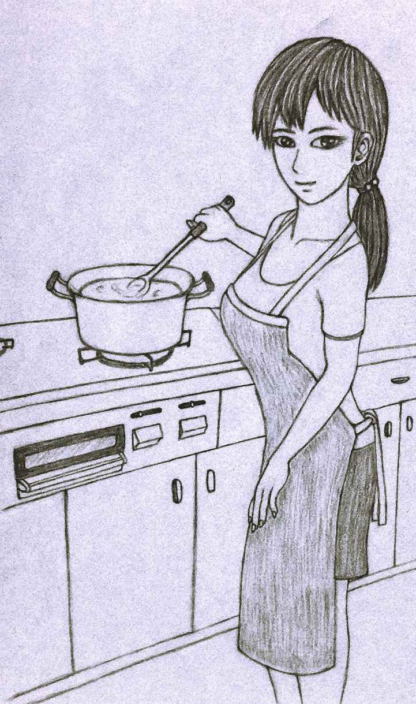

| Ｓゲームブッカーの全kindle本目録 | |
| Ｓゲームブッカー | |
| esuge-mubukka- (2014) | |
Ｓゲームブッカーの全kindle本目録
Ｓゲームブッカー
ページ数はおおよそであり、更新したものについては増えている場合があります。私が出版したKindle本に興味がありましたら、著者名Ｓゲームブッカー
で（英語版のみはSgamebooker
で）検索してみてください。
ＳＡＩＫＡＩ
２０１４年２月９日発売。再会シリーズ第１弾、５６０パラグラフ、５９６ページ。鉛筆画の挿絵８点。紙と筆記用具、選択肢によってはサイコロ１個必要。
２０１０年に小説投稿サイトで初期版を公開していたもの。好評を得まして、大幅に加筆修正した唯一の長編。主人公はとある理由で体外離脱（幽体離脱）して、奇妙な異世界の町を探索します。能力値やサイコロ戦闘などはなく、フラグチェックとマッピングをしながらプレイ。クリアの達成感はかなりあると思います。「ＳＡＩＫＡＩ ～another story～」とこちらをプレイすることによって物語の全貌が明らかになるようになっています。コンセプトは、プレイするたびに新しい発見がある、多彩なフラグの使い方、最も感動するゲームブック、体外離脱シミュレーター。
プロローグ
未希を誰よりも愛していた。初めての彼女だった。雪の降る道で、足をくじいてうずくまっていたところを真っ先に駆け寄って、
「大丈夫？」
と声をかけたのがきっかけだ。初々しいセーラー服姿に長い黒髪、大きくて潤んだ瞳に胸がときめいた。付き合い始めてそろそろ１年が過ぎようとしており、記念日にはどこか旅行にでも行こうと２人で話していた。それなのに......。
記念日まであと数日という日の朝、未希は女子高の登校中に突然飛び出してきた車にはねられてしまう。すぐに近くの病院へ運ばれたが、打ち所が悪かったらしく助からなかった。未希のお母さんから涙声で電話があり、病室に無我夢中で駆けつけた時、未希は顔に白布をかけられてベッドに横たわっていた。白布をめくる俺の手は絶望で震えた。色白で愛らしい顔には傷ひとつなく、それがせめてもの救いだった......。
アパートに戻っても何もする気になれず、誕生日に貰った未希の手編みのセーターを抱き締めて、部屋の片隅に座り込んでずっと泣いていた。腕時計を見ると、夜の７時が少し過ぎている。１０時間も泣いていたのか。さすがに泣き疲れて、気晴らしにテレビをつける。体外離脱の特集番組をやっている。体外離脱体験者が、亡くなった祖母に会って話をしたと真剣な表情で語る。
これだ！
思わず画面に釘付けになる。
意識が肉体を離れて空を飛んだり、遠く離れた土地を訪れることができるという体外離脱に興味を持ち、本などを読んで何度か試したりしていたが、１度も成功したことはなかった。
簡単な離脱法が紹介される。これならいけるかもしれないと思えた。未希は今、どんな気持ちでいるのか知りたい。どうしても、再び会って話がしたかった。
さっそくパジャマに着替え、その上にセーターも着る。離脱成功への力を貰えそうな、そんな気がしたからだ。カーテンを閉め、部屋の明かりを消し、腕時計を外してテーブルの上に置いてからテレビも消す。ベッドに仰向けに寝て、両腕は体から少し離し、手のひらを上に向ける。ヨガの休息のポーズというやつだ。ゆっくり深呼吸しながら全身の筋肉を脱力させ、肉体の感覚がなくなるまでリラックスさせる。眠りに落ちるギリギリまで意識し続け、まどろみ状態を維持する。
ひたすら意識を保つことに集中し続けていると、徐々に体が細かく振動し始めた！ これは初めての体験だ！ 体は金縛り状態になっているようで、思うように動かすことができない。しばらくすると、闇の中にぼんやりと未希の顔が浮かんできた！ 微笑んでいるようにも、悲しそうな表情をしているようにも見える。少しの間見つめ合っていると、徐々に未希の顔が遠ざかり始めた。
待ってくれ！
心の中でそう叫び、動かない右腕を意識的に伸ばす。消えてゆく未希の顔。懸命に右腕を伸ばし続けていると、ずるりと体と体が離れる感覚がした！
用意するもの
紙と筆記用具、物語の展開によってはサイコロが１個必要になります。
フラグチェック
"Ａをチェック"などの指示があったらＡとメモします。"チェックがある"とは、チェックしてまだ消されていない、"チェックがない"とは、チェックしたことがないか、消してあることを意味します。消すように指示があったら斜線などを引いて、何を消したかわかるようにしておきましょう。
地図の描き方
進んだ距離によって道の長さを変えます。○へ少し進む、○へ進む、○へしばらく進む、○へしばらく進み続ける、○へかなりの距離進むの順で距離は長くなり、○へ進むが２回続いた場合は、しばらく進み続けると同程度の距離になります。見つけた建物やチェックしたフラグなども書き込んでおくと良いでしょう。
【１】
浮遊感を感じてゆっくり目を開ける。ベッドに寝ている自分を２メートルほどの高さから見下ろすように浮かんでいた。ついに体から抜け出ることに成功したようだ！
この体に戻れるだろうか？
そんな不安がよぎった瞬間、背中から強い力で引き戻されそうになる。背後を見ると、背中から透明なへその緒のようなものが伸びていて、寝ている自分の心臓の辺りから伸びる緒とつながっていた！ これが肉体と抜け出た意識体をつなぐ「魂の緒」と呼ばれているものなのだろう。とっさに、
戻れなくてもいいんだ！
と強く念じると、引く力がフッと緩まった。
その隙に空中を漂い、ベランダへ続く窓を開ける。外は薄暗く、離脱前と同じような時間帯のようだ。空中を漂ったままベランダへ出ると、見慣れない町並みが広がっていた。振り返ると、アパートがあると思っていた場所には何もなく、魂の緒がゆらゆらと夜空に向かって伸びていた！
慌てて手足をバタつかせて夜空を飛行するが、慣れないせいか、すぐにバランスを崩してゆらゆらと地面に落下してしまう。強く尻餅をついても、不思議なことに痛みは感じない。きっと抜け出した体だからだろう。
立ち上がって砂のついた手を払っていると、離脱後は最初に自分の両手のひらを見ると本に書かれていたことを思い出した。それは抜け出た意識体の感覚をつかむためらしい。両手のひらをまじまじと見る。指紋まではっきりとしたいつもの手だ。服装は離脱前と同じで、パジャマの上下にセーターを着ている。ズボンのポケットに手を突っ込んでみるが、何も入っていない。足元はやはり裸足だが、何も感じないからこのままでいいだろう。
辺りを見回すと、ここはどこかの住宅街のようだ。落下したのは家々が建ち並ぶ十字路のちょうど真ん中だった。明かりのついた家は少ないが、今は何時頃なのだろう？ 辺りは静まり返り、人や車が通る気配は今のところない。十字路から延びる道の先はどれも薄暗くてよく見通せないが、街灯や月明かりがぼんやりと道を照らしてくれてはいる。月が出ている方を東として、まずはどの方向へ進もうか。東の道は少し先で途切れ、西の道は住宅街の間をかなり先までまっすぐに続き、南の道は先の方で折れているように見える。北の道の先には左手に高い建物が見える。まずはどちらへ進むべきか迷っていたその時だった。
《信治なのね》
聞き覚えのある声が脳内に響いた！ 未希の声だ！ どうやら未希と同じ世界に離脱できたようだ。
「未希か！ 今どこにいるんだ？」
思わず叫んで辺りを見回す。
《町のね、どこかに......》
どこか遠くから聞こえてくる気がする。どうやらテレパシーを使っているようだ。
「どうした？ 町のどこかにいるのか？」
《今は言えないの》
未希の予想外の返答に戸惑う。
「何で言えないんだよ！？」
それきりテレパシーは途絶えてしまった。未希に何かあったのかもしれない。町を歩き回って探すしかなさそうだが、何かの拍子に肉体に引き戻されてしまう可能性もある。その前に何としても未希を探し出そう。
東へ進む １２へ
西へ進む ２８へ
南へ進む ４６へ
北へ進む １８へ
ＳＡＩＫＡＩ ～another story～
２０１４年９月８日発売。再会シリーズ第２弾、６５パラグラフ、７７ページ。サイコロ、筆記用具などは不要。
ＳＡＩＫＡＩ２として作ったもので、舞台は同じでもマッピングは不要になるようにしました。ＳＡＩＫＡＩの前日談的物語。ＳＡＩＫＡＩとこちらをプレイすることによって物語の全貌が明らかになるようになっています。ストーリー上、バッドエンドは少なめ。表紙の絵は２つの絵を合成したもの。
プロローグ
気がつくと、体が宙に浮いていた。どうして浮いているのだろうと視線を下に向けると、５メートルほど下の歩道に髪の長いセーラー服姿の女の子がうつ伏せで倒れているのが見えた。女の子の体はピクリとも動かない。私はその女の子の真上に浮かんでいた。すると、横断歩道を数メートル過ぎた道路の左脇に停まっていた軽自動車からお爺さんが慌てた様子で降りてくると、倒れている女の子に駆け寄って助け起こす。
「大丈夫ですか！？」
助け起こされて女の子の顔が見えた。
あっ！
うつ伏せで倒れていたのは私だった！ どうやらあの車にひかれてしまったらしい。じゃあ、この浮かんでいる私はやっぱり......。
倒れている私とお爺さんの周りに人が集まってくる。その中のスーツ姿の若い男性が、携帯でどこかに電話している。
お父さん、お母さん、ごめんなさい。１７年しか生きられなかった私を許してください。そして、信治。こんな形で突然お別れすることになってしまってごめんなさい。
彼とは約１年前に出会い、すぐに付き合うことになった。私をいつも大事にしてくれて、会えない日には必ず電話やメールをしてくれた。付き合って１周年の記念日には２人で旅行にでも行こうと話しており、私はその日をとても楽しみにしていた。記念日まであと数日だった......。
その時、けたたましいサイレンを鳴らしながら救急車が混んだ車の間をぬって到着した。降りてきた２人の救急隊によって私は担架に乗せられ、再びサイレンを鳴らしながら救急車が走り去っていく。私はその光景をただ呆然と見つめていた。
あの世へ旅立つ前に、もう一度信治に会いたい！
そう思った瞬間、信治が住宅街に挟まれた道を歩いているのが目に飛び込んできた。どうやら瞬間移動したようだ！ 凄く便利な能力が使えるようになっていることに驚く。こちらに歩いてくる信治の顔を空に浮遊しながらじっと見つめる。信治に霊感があったなら、私の存在に気づくことができたのに。
しばらくすると、信治はズボンのポケットから携帯を取り出し、誰かと話し始める。
「はい」
「えっ！ 未希が！？」
「わかりました！ すぐ行きます！
私が車にひかれたという知らせの電話だったようだ。信治は携帯を持ったまま突然駆け出した。私は飛行して、その後を見守るようについていく。信治は目の前から走ってくる自転車に乗った男性の行く手を遮り、
「すみません！ 後で必ず返しますから、ちょっと自転車を貸してください！」
と懇願する。男性は事情を察したのか、すぐに自転車から降りて、快く貸してくれた。信治は自転車にまたがると猛然とペダルをこぎ出した。 信治が向かった先は、約１年前、雪の降る道で滑って膝を痛め、信治に連れられて手当てを受けた病院だった。信治は入り口に自転車を停め、ドアを開け放って院内に入り、階段を駆け上がる。私は開けっ放しのドアから院内にすべり込むようにして入り、信治のすぐ後を飛行して２階まで上がる。信治は私の名前のある病室を見つけると駆け込んだ。私も後から入ると、そこにはお母さんが待っていて、ハンカチ片手に泣いていた。傍らには医師の姿もある。信治はベッドに横たわる私に歩み寄ると、震える手で顔にかけられた白布をそっとめくる。その様子を見ているだけで言いようのない悲しみが伝わってきた。信治は愛おしそうに私の頬に触れた。
「嘘だろ......」
すでに温かさは失せていたのか、信治は力が抜けたように両膝をつき、ベッドに横たわる私に泣きつく。私は声を上げて泣く信治の後ろ姿をすぐ後ろで見つめていた。私の目にも涙が溢れ、信治の後ろ姿が滲み出す。幽霊でも泣くことができるんだ。お母さんは医師とともに、横たわる私から片時も離れずに泣き続ける信治をいつまでも見守っていた。
お父さんが慌てて駆けつけてきた時には、私は病室から移動させられようとしていた。
「未希ーーっ！」
信治の悲痛な叫び声が少しずつ遠ざかりながら、何度も院内にこだましていた。私はそれを聞きながら、次第に目の前が真っ暗になってくるのを感じた......。
【１】
光のない真っ暗な闇の中を何かに導かれるように飛んでいた。とても穏やかな気持ちだ。この先には愛に満ちた幸せな世界が待っている。そう感じた瞬間、突然目の前に眩い大きな光の塊が現れた！
《未希さんですね》
その光は中性的な澄んだ声で私の脳内に直接語りかけてきた。
「あなたは？」
《いずれわかります。それよりも、信治さんが数時間後に異世界のある町に体外離脱して来ます》
「えっ！ 信治が！？」
信治が体外離脱できるなんて聞いていなかった。
《彼はあなたにどうしても会いたいようです。信治さんは初めての体外離脱で、異世界には不慣れです。再会のその時までに体外離脱後の町をあちこち見て、どんな世界なのかを知っておくべきです。今のあなたなら、すでに使った瞬間移動と飛行の他に、テレパシー、物体すり抜け、金縛り、憑依を使えるようになっています。役立てなさい。信治さんとの最後の時間を過ごした後、私たちの世界に来るのですよ》
それだけ伝えると、眩い大きな光は一瞬目を開けていられないほどの強烈な光を放った。私は思わず目をつぶり、右手を目の前にかざして光を遮る。
眩しい光がやむと、明るい太陽が照りつける見慣れない町の空に浮かんでいた。どうやらここが信治が体外離脱して来る町らしい。視線を下に向けると、デパートらしき建物の１０メートルほど真上に浮かんでいるのがわかった。屋上遊園地には今は誰もいないから動いていないけれど、ミニＳＬやティーカップ、飛行機や動物の乗り物などがある。その中で可愛い象の乗り物に目が留まる。北側には双眼鏡も設置されている。それを見て財布のことを思い出し、スカートのポケットに手を突っ込んで中の物を取り出す。右に携帯、左にサイフとハンカチが入っていた。携帯を開くと、電波がつながっている。ひかれた時に壊れていなくて良かった。このハンカチの裏には信治と付き合うことが決まった日に２人で行った公園で私がベンチで書いた相合傘と信治と私の名前がある。サイフの中を確かめると、千円札が３枚と１００円玉が５枚入っていた。
それらをポケットに入れ、空を漂いながら屋上の周囲を見渡していると、近くにいくつかの気配があることに気がついた。それは南西と東にあり、南西のはここからすぐ近く、東のは自転車に乗っているかのような速さで南へ移動している。体外離脱後の町にはどんな人たちが暮らしているのだろう。気配にアクセスする感じで瞬間移動することにした。
南西の気配 ５へ
東の気配 １３へ
ＳＡＩＫＡＩ ～completed before～
２０１４年１２月１１日発売。５５３パラグラフ、５８５ページ。鉛筆画の挿絵８点。紙と筆記用具、選択肢によってはサイコロ１個必要。
「ＳＡＩＫＡＩ」の２０１１年１月１８日完成版を若干修正したもので、小説投稿サイトに公開したものから半年ほど経っています。現行版にはある、ない要素が多数あり、違う感覚でプレイできます。
プロローグ
未希を誰よりも愛していた。初めての彼女だった。足をくじいてうずくまっていたところを真っ先に駆け寄って、「大丈夫？」と声をかけたのがきっかけだ。初々しいセーラー服姿に長い黒髪、大きくて潤んだ瞳に胸がときめいた。付き合い始めてそろそろ１年が過ぎようとしており、記念日にはどこか旅行にでも行こうと２人で話していた。それなのに......。
記念日にあと数日というある日の朝、未希は女子高の登校中に、突然飛び出してきた車にはねられてしまう。すぐに病院へ運ばれたが、打ち所が悪かったらしく助からなかった。未希のお母さんから涙声で連絡を受け、病院に無我夢中で駆けつけた時、未希は顔に白布をかけられてベッドに横たわっていた。白布をめくる俺の手は絶望で震える。色白で愛らしい顔には傷ひとつなく、それがせめてもの救いだった......。
一旦アパートへ戻っても何もする気になれず、誕生日のお祝いに未希が編んでくれたセーターを抱きしめてずっと泣いていた。ふと目覚まし時計を見ると、夜の８時過ぎ。１０時間も泣いていたのか。さすがに泣き疲れて、気晴らしにテレビをつける。体外離脱の特集番組をやっている。体験者が亡くなった祖母に会って話をした、と真剣な表情で語る。
これだ！
涙を拭いながら画面に釘付けになる。意識が肉体を離れて空を飛んだり、やりたい事が何でもできるという体外離脱に興味を持ち、本などを読んで何度か試したのだが、１度も成功していなかった。簡単な離脱法が紹介される。これならいけるかもしれないと思えた。未希は今、どんな気持ちでいるのか知りたい。どうしても再び会って話がしたかった。
さっそくパジャマに着替える。それから、その上に未希の愛情のこもったセーターも着る。離脱成功への力をもらえそうな、そんな気がしたからだ。カーテンを閉めて部屋の電気を消す。ベッドに仰向けに寝て、両手は体から少し離し、手のひらを上に向ける。ヨガの休息のポーズというやつだ。ゆっくり深呼吸しながら、顔・肩・腕・腰・足と時間をかけて全身の筋肉を脱力させ、肉体の感覚が消失するぐらいまでリラックスさせる。まるで体が消えてしまったかのように。眠りに落ちるギリギリまで意識し続け、まどろみ状態を維持しながら、約１メートルの高さから寝ている自分を見下ろす姿をイメージする。
しばらくすると金縛り状態になり、体が細かく振動し始める。これは初めての体験だったが、恐怖心を捨て去り、心を落ち着かせることに集中する。意識を見下ろしている自分に移すイメージを辛抱強く続けていると、頭からにゅるっともうひとつの体へ引っ張られる感じがして、ついに体外へ抜け出ることに成功したのだった！ きっとセーターのお陰に違いない。
用意するもの
紙と筆記用具、展開によってはサイコロが１個必要になります。
フラグチェック
ＡをチェックとあったらＡとメモします。チェックがあるとは、チェックしてまだ消されていない、チェックがないとは、チェックしたことがないか、すでに消したことを意味しています。消す場合、斜線など引いて何を消したかわかるようにしておきましょう。
地図を描きながらのプレイを推奨します。進んだ距離によって道の長さを感覚的に変えます。
少し進む、○へ進む、○へしばらく進む、○へしばらく進み続ける、○へ１００メートル進むの順で長距離になっていきます。見つけた建物やフラグもメモしておくと後々便利です。まずは地図を完成させるつもりで。
体がふわふわと軽い。ゆっくり目を開けると、１メートルほど下のベッドに寝ている自分と対面して浮かんでいることに気づく。この体に戻れるだろうか？ そんな不安を感じた瞬間、不意に強い力で引き戻されそうになる。よく見ると、体と体が透明なへその緒のようなものでつながっているではないか！ とっさに、「戻れなくてもいいんだ！」と強く念じると、引く力がフッとゆるまった。その隙に空中を漂い、窓を開けてベランダへ出る。外は薄暗く、離脱前とほぼ同じ時間帯のようだ。緒の引力はすでに感じなくなっている。
手足をバタつかせて夜空を飛行する。だが、すぐにゆらゆらと地面に落下してしまう。強く尻餅をついても、不思議なことに痛みは感じない。きっと離脱後の世界だからだろう。空から探すつもりでジャンプして飛び上がろうとするが、慣れないせいかどうにも上手くいかない。
諦めて自分の格好を確認することにする。まずは両手の手のひらを見ると本に書いてあったのを思い出し、両手をまじまじと見る。指紋さえはっきりとしたいつもの手だ。服装は離脱前と同じで、パジャマの上にセーターを着ている。ズボンのポケットに手を突っ込んでみる。持ち込んだものは何もない。足元はやはり裸足だが、特に何も感じないからいいだろう。
ここはどこかの町のようだ。落下した場所は、住宅が建ち並ぶ十字路の真ん中だった。明かりのついている家は少ないが、今は何時頃なのだろう？ 辺りは静まり返り、人や車が通る気配は今のところない。どちらへ進むべきか迷っていると、聞き覚えのある声が脳内に響いた。
《信治なのね》
未希の声！ テレパシーか何かを使っているようだ。
「未希か？ 今どこにいるんだ！？」
思わず叫んで辺りを見回す。
《今は言えないの》
「なんで言えないんだよ？」
《町の、どこかに......》
それっきりテレパシーは途絶えたのだが、遠くない場所に離脱できたことがわかっただけでも嬉しかった。町を隅々まで歩き回ってみるしかないが、何らかの拍子に肉体へ引き戻されてしまう可能性もある。その前に何としても見つけ出さなくてはならない。
ここからだと、十字路から伸びるそれぞれの道の先は、薄暗くてよく見通せない。月明かりや街灯が、ぼんやりと辺りを照らしてくれてはいる。月が出ている方を東として、まずはどの方向へ進もうか。
東へ進む １２へ
西へ進む ２８へ
南へ進む ４６へ
北へ進む １８へ
僕の宿題
２０１４年９月２５日発売。１０２パラグラフ、１３１ページ。サイコロ、筆記用具などは不要。
フラグチェックをしないようにしているため、文章量的には２番目に多く、６回は新鮮な気持ちでプレイできるようになっています。中学生頃にノートに無題でパラグラフ５まで書いていたものを大幅に加筆したもの。やや心霊的要素あり。
【１】
僕の名前は山下たくま、小学５年生だ。
ああ、参ったな。宿題をしようと思ったらランドセルに入ってない！ きっと机の中に忘れてきちゃったんだ。明日提出なのにどうしよう。枕元の目覚まし時計を見ると、夜の９時が少し過ぎている。お父さんとお母さんは旅行に出掛けて留守にしているから、車で取りに行くことはできない。おまけに自転車は修理に出していてしばらく返ってこない。１人で夜の学校に取りに行くのは怖いなぁ。でも、急がないと宿題をする時間がなくなっちゃうぞ。妹の綾香はもう寝ちゃってるし。そう言えば、外にジュリーもいたんだっけ。
ジュリーを連れて行く ２へ
綾香を無理やり起こす ３へ
誰にも迷惑かけるわけにはいかない。１人で取りに行く ４へ
Friday the 13th ～魔のマンション～
２０１４年３月１８日発売。魔のコテージ、魔のアパートに続く魔のシリーズ第３弾、２２６パラグラフ、３２０ページ。鉛筆画の挿絵１点。紙と筆記用具必要。
プロローグ
君の名はジェイソン。その名を聞いた者を震え上がらせる、悪魔のような殺人鬼である。
今日は１３日の金曜日。英語圏、ドイツ、フランスなどで不吉な日とされており、君が唯一活発に行動する日でもある。
今宵も君は、クリスタル湖キャンプ場で青春を謳歌していた若者たちを襲った。だが、１０人の若者たちは１人残らず近くのマンションに逃げ込んでしまった。逃げられた理由は、隠れ家から持参した愛用の鉈をキャンプ場に向かう途中で川に落としてしまい、何も持たずに襲ったからだ。
静かにマンションへと近づいていく君の後姿を１羽のカラスが見つめていた。
用意するもの
紙と筆記用具。
殺意力
君の活動意欲である殺意の源、それと同時に健康状態を表す力。基本的に開始時の２０点を超えて回復することはできない。減点は負傷、体調、精神に分かれ、減点の合計が最大を超えると、殺意力が尽きたことを意味する。回復する場合は減点を減らすが、減点がない場合は回復できない。
殺人数
惨殺した若者たちの人数。いかに早く１０にするかがポイント。
チェック
フラグチェックを書き込む。"チェックがない"とはチェックしたことがないか消した、"チェックがある"とはチェックしてまだ消していないことを意味する。
新たなる力
新たなる力を得ることができたら、その都度能力名とその特徴を書き込む。すべての力を手に入れた時、君は最強の殺人鬼になっていることだろう。
マンション見取り図
マンションは５階建てで各階に１０部屋あり、部屋数は５０ある。階を移動する場合は体力温存のため、マンション中央のエレベーターを使用する。部屋番号には調べた回数や殺人数がプラスになった印を書き込もう。
さあ、逃げ込んだ１０人の若者たちを惨殺するために好きな順に部屋を調べよう。君から逃げ切れる獲物など、この世に存在しないのだ！
階を移動する。
５階へ
４階へ
３階へ
２階へ
１階へ
１階
１０１号室 １へ １０２号室 ２へ
１０３号室 ３へ １０４号室 ４へ
１０５号室 ５へ １０６号室 ６へ
１０７号室 ７へ １０８号室 ８へ
１０９号室 ９へ １１０号室 １０へ
２階
２０１号室 １１へ ２０２号室 １２へ
２０３号室 １３へ ２０４号室 １４へ
２０５号室 １５へ ２０６号室 １６へ
２０７号室 １７へ ２０８号室 １８へ
２０９号室 １９へ ２１０号室 ２０へ
３階
３０１号室 ２１へ ３０２号室 ２２へ
３０３号室 ２３へ ３０４号室 ２４へ
３０５号室 ２５へ ３０６号室 ２６へ
３０７号室 ２７へ ３０８号室 ２８へ
３０９号室 ２９へ ３１０号室 ３０へ
４階
４０１号室 ３１へ ４０２号室 ３２へ
４０３号室 ３３へ ４０４号室 ３４へ
４０５号室 ３５へ ４０６号室 ３６へ
４０７号室 ３７へ ４０８号室 ３８へ
４０９号室 ３９へ ４１０号室 ４０へ
５階
５０１号室 ４１へ ５０２号室 ４２へ
５０３号室 ４３へ ５０４号室 ４４へ
５０５号室 ４５へ ５０６号室 ４６へ
５０７号室 ４７へ ５０８号室 ４８へ
５０９号室 ４９へ ５１０号室 ５０へ
黄金カブトムシ
２０１４年３月１４日発売。黄金シリーズ第１弾、１１３パラグラフ、１７０ページ。鉛筆画の挿絵２１点。紙と筆記用具必要。
用意するもの
紙と筆記用具。
フラグチェック
チェックするように指示があった場合は、フラグチェック欄に書き込みます。
マッピング
森の地図は正確に描きましょう。どこに何があったかも書き込んでおくと、次回の挑戦に役立ちます。
目指すはベストエンディングです。あなたは何回目で辿り着けるでしょうか。大人の方は童心に帰ったつもりでプレイしてみてください。
【１】
「ついに幻の黄金に輝くカブトムシをムシズキの森で見たんじゃ！ わしが捕まえてくるから待っているんじゃぞ」
じいちゃんはそう言って出掛けたまま、1週間も帰って来ない。ちなみにムシズキの森というのは、家から少し離れたところにある、いろいろな虫が昼夜問わず集まってくる森のことだ。虫好きにはたまらない森だからか、いつしかそんな名前がついたらしい。
じいちゃんは黄金カブトムシのことを、
「月明かりに照らされて、まるで蛍のように光を放っておった。綺麗じゃったのう」
と言っていた。
明日からいよいよ夏休みが始まる。夏休みになったらじいちゃんを追ってムシズキの森に入ろうと決めていた。もちろん黄金カブトムシにも興味がある。売ったら家が一軒建てられるほどの価値があるらしい。じいちゃんは今も黄金カブトムシを求めてムシズキの森をさまよっているに違いない。
まずは家族のみんな、それから近所の人たちから黄金カブトムシについての情報を集めよう。今は昼がちょっと過ぎているぐらいだから、父ちゃんは仕事でまだ帰って来ていない。同じ人に２回聞かないようにしよう。
母ちゃん ２へ
兄ちゃん ３へ
妹 ４へ
ニルの大冒険
２０１４年３月３日発売。１１８パラグラフ、１２２ページ。最終ページに登場人物、怪物、地図をまとめた当時の絵が１点。サイコロ１個（なくてもプレイ可）、紙と筆記用具必要。
【０】
用意するもの
サイコロ１個（ライフ決めにしか使わない）、紙と筆記用具。
ライフ
１０にサイコロを１個振って出た数、サイコロを使用しない場合は４を足す。初期値を超えて回復しても構わないが、０以下になったら力尽きたことになる。
ドル
通貨。
武器、防具、食料、持ち物
途中で入手した物を書き込む。
【１】
ここはハーレ王の城の王室。ニルはハーレ王に呼ばれてそこにいた。
ハーレ王「頼む。ゴーリスに連れ去られたシール姫を助け出してくれ。ゴーリスは悪魔に魂を売り、頭から鬼のような角が２本生えてきた悪の魔術師だ。やつは巨大なコウモリに化けて姫を悪魔のいけにえにしようと連れ去ってしまったのだ」
ニルは王国で剣の扱いが上手いと噂になったことがあり、それだけの理由で王に呼ばれたのだ。王はニルがひたむきに剣の修行に精を出していることを知って以来、ニルに可能性を感じていた。
ニル「わかりました。できるだけのことを致しましょう」
以後、ニル省略。
ハーレ王「その勇気ある言葉を待っていたぞ。この広刃の剣とハーレの地図を持っていけ。ゴーリスは悪魔塔に住んでいる。それから、装備を整えるための５０ドルだ。もっとやりたいところなのだが、お主が失敗した時のために残しておきたいのだ。では、頼むぞ。きっと助け出してきてくれ。だが、くれぐれも無理をするなよ」
ニルは５０ドルをズボンのポケットに入れ、剣と地図を持ち、城の階段を下りる。城を出たところでニルは地図を広げた。悪魔塔は城の南東にある。
「ここに来たのは初めてだ」
ニルは城に呼ばれたのは初めてであり、城の外の景色を見るのも初めてだった。
ニルが悪魔塔を目指して進んでいると、見たことのない木を見つけた。
「何だ、あの木は」
その木には、バナナ、リンゴ、柿、イチゴがなっている。まるで果物屋が木になっているようだ。
「１本の木にいろいろなっている」
バナナを食べてみる １８へ
リンゴを食べてみる １６へ
柿を食べてみる ２９へ
イチゴを食べてみる １３へ
先を急ぐ ２へ
ゾンビ館の財宝
２０１４年１月２５日発売。１４３パラグラフ、１７１ページ。表紙画と同じデジタル画の挿絵２０点。サイコロ１個、紙と筆記用具必要。
小学４年生頃に作った最初のゲームブック「ゾンビ宝探しゲーム」を大幅に加筆したもの。さまざまなゾンビと武器が待ち受けています。
【０】
用意するもの
サイコロ１個、紙と筆記用具。
初期装備
君はゾンビに対抗するためにピストルを腰に巻いたホルスターに収め、財宝を詰めるための大きめのバックパックを背負っている。服装は丈夫な皮のジャケットにジーパン、足元にはブーツを履いている。
装備重量
装備にはそれぞれ重量があり、出発時はピストルの１、バックパックの２を合わせた３。
噛まれる値
出発時は１。ピストル等の遠距離から攻撃できる銃器以外を使用しての戦闘では、接近してゾンビと戦うことになるため、常に噛まれるリスクを伴なう。装備の総重量が１０以上になると動きが鈍くなり始めてゾンビに噛まれるリスクが上がるため、噛まれる値を＋１、その後は５増える度にさらに＋１すること。
ゾンビとの戦い方
ピストルを使用する場合は、弾丸を１発消費してサイコロを１個振って出た数に２を加えた分だけゾンビの生命力を減らせる。
素手の場合は、サイコロを１個振って出た数が噛まれる値より大きいなら、出た数の分だけゾンビの生命力を減らせる。ゾンビの生命力を０以下にしたら倒したことになる。銃器以外を使用しての戦闘では、噛まれる値以下が出るとゾンビに噛まれたことになり、君もゾンビとなってゾンビ館を守る一員と成り果てる。
銃器の扱い
君の銃器の扱いの腕前をサイコロを１個振って決める。
１か２が出たら、素人。君はゾンビを目の前にして慌てふためいてしまい、無駄撃ちしてしまう。銃器の弾丸を１回で２倍消費。
３か４が出たら、経験あり。君はゾンビを目の前にしても冷静に扱える。
５か６が出たら、凄腕。君はゾンビの急所を狙い撃ちできるほどの冷静さと腕前の持ち主だ。銃器を使用しての戦闘では、サイコロを１個振って出た数にさらに２を加えることができる。
ピストル弾丸
君は３０発もの弾丸を持参してきていたが、道中で野生の熊に襲われ、撃退するために減ってしまっている。銃器の扱いが素人なら８発、経験ありなら１２発、凄腕なら１６発残っている。
戦闘の有利不利
戦闘におけるボーナスやペナルティを書き込む。
チェック
フラグチェックを書き込む。
【１】
ゾンビ館はまだ遠い。その館には、どこからか溢れ出てきたゾンビどもに守られた莫大な財宝が眠っているという。これまで一攫千金を夢見た者たちが財宝を求めて館に潜入したが、１人として生きて帰ってはこなかったと聞く。それどころか、館に潜入するのを諦めて逃げ帰った者の話では、館に辿り着く前にゾンビに襲われ、無念の最期を遂げた者もいたらしい。君はそれでも財宝を持ち帰って人生を変えてやろうとこの地にやって来た命知らずのトレジャーハンターだ。財宝を独り占めするために君はたった１人で館に向かう。
徐々に荒れ果ててきた荒野をゾンビ館目指して１時間ほど歩いて君はふと気がついた。しばらく人の姿を見かけていないことを。ここから先は気を引き締めて進まなければならない。ピストルを握る手にも力が入る。
辺りに注意を払いながら曲がりくねった一本道を進んでいると、前方に木々の生い茂る森が見えてきた。道はその前で丁字路に変わり、道の交わる寸前の道の真ん中に「この先、どちらも危険！」と注意書きされた真新しい立て札が行く手を遮るように立てられている。君は方向を間違っていなかったことを知るとともに、ゾンビとの戦いが間近に迫っていることを感じた。この森に入ってゾンビにでも襲われたら厄介なことになるだろう。生い茂る木々に遮られてピストルの弾丸を無駄にしてしまうかもしれない。
右の道を進む ４へ
左の道を進む ６へ
大鬼村
２０１４年１月２６日発売。家族救出シリーズ第１弾、７３パラグラフ、７５ページ。鉛筆画の挿絵１点。サイコロ１～２個、紙と筆記用具必要。
「王鬼村」（「妖怪村」を大幅に加筆）をさらに加筆したもの。タイトルに最終ボスの名前がある、主人公が同じで家族の誰かを救出する、ルールが共通のシリーズ。さまざまな妖怪が待ち受けています。
【０】
用意するもの
サイコロ１～２個、紙と筆記用具。
生命力
君の肉体的強さを表す力。１２にサイコロを２個振って出た数を足す。０以下になったら力尽きる。君は大鬼村に向かう道中で生命力を消耗しているので、出発時を超えて回復しても構わない。
武器
父から譲り受けた日本刀を腰に差している。
持ち物
途中で入手した物を入れるためのザックを背負い、中には小型のテント一式も入っている。
弱点
妖怪にはそれぞれ弱点があり、サイコロを１個振って決められた数が出ると倒したことになる。
【１】
妹の悲鳴を聞きつけ、君は家の外に飛び出した。１０メートルほどの木綿のようなものが妹を背中に乗せて飛び去っていくのが見える。君は二十歳の誕生日に父から譲り受けた日本刀を腰に差し、ザックを背負ってからバイクに跨る。妹の分のヘルメットがあることを確認すると、一反木綿を見失わないように君はバイクを走らせる。周りの景色は次第に山深くなり、人里からも離れ、道は荒れてくる。君は不吉な予感がしていた。
やがて、前方に怪しげな大鳥居が見えてきた。君は予感が的中したのを悟る。一反木綿は気を失っている妹を背中に乗せたまま大鳥居をくぐる。大鳥居から先が細い峠道になっているのに気づいた君は仕方なくバイクを停める。藪の中にバイクを隠す間に一反木綿の姿が見当たらなくなってしまっていた。この大鳥居から先には人を襲う妖怪が現れるという妖怪山と呼ばれている山がある。その奥地には、手下の妖怪に若い娘を連れ去らせている大鬼という妖怪の親玉が住む村があり、若い娘たちが連れ去られたまま帰ってこないという噂だ。一反木綿はその村に向かったに違いない。君は急ぎ足で一反木綿の後を追う。
道幅１メートルほどの細い峠道を足元に注意しながら進む。慎重に谷底を覗くと、はるか下に川が流れているようだ。このような危険な道がそのままになっているのはなぜだろう？ 妖怪が現れることを知らない人間を近づかせないためか、妖怪を鳥居から外に出させないためか。
曲がりくねった峠道をしばらく進むと、次第に道幅が広くなり、両側が木々に挟まれた山道に変わった。妖怪に用心しながら山道を進むと、道が二手に分かれる。どちらも前方にうっそうと木々の生い茂る不気味な森が広がり、奥地へと続いている。右の森は左よりはやや木々が少なく、左の森の木々の間には尖った屋根が見えている。何か建物があるようだ。どちらの道も、いつ妖怪が現れてもおかしくない雰囲気だ。君はそっと日本刀の柄に手をかける。
右の道を進む ５へ
左の道を進む ３へ
鳥王の島
２０１４年１月２９日発売。家族救出シリーズ第２弾、１５５パラグラフ、１６６ページ。鉛筆画の挿絵１点。サイコロ１～２個、紙と筆記用具必要。
「鳥王の島」を大幅に加筆したもの。タイトルに最終ボスの名前がある、主人公が同じで家族の誰かを救出する、ルールが共通のシリーズ。さまざまな空飛ぶ怪物が待ち受けています。
【０】
用意するもの
サイコロ１～２個、紙と筆記用具。
生命力
君の肉体的強さを表す力。１２にサイコロを２個振って出た数を足す。「大鬼村」をクリアしていたらその数に２を加えることができる。０以下になったら力尽きる。君は鳥王の島に向かう船旅で生命力を消耗しているので、出発時を超えて回復しても構わない。
武器
父から譲り受けた日本刀を腰に差している。
持ち物
途中で入手した物を入れるためのザックを背負っている。中には水筒が入れてある。
弱点
島の敵にはそれぞれ弱点があり、サイコロを１個振って決められた数が出ると勝ったり倒したことになる。
アイテムの引継ぎ
「大鬼村」クリア時のアイテムをそのまま使用することができる。
【１】
大海原に浮かぶ鳥王の島と呼ばれる絶海の孤島には、鳥王という空を飛ぶ生き物の王が、使いの大鷲に世界中の男を連れ去らさせているという。君は父を鷲掴みにして連れ去る大鷲を見失わないように父の船で追う。父は時折、手足を動かして抵抗している。
やがて、大鷲の向かう先に島が見えてきた。島の上空には大きな鳥らしき生き物が数羽旋回している。どうやらあの島が鳥王の島のようだ。島の上空を飛ぶ旅客機は必ず空飛ぶ怪物によって襲われるという噂だ。大鷲は気を失っている父を鷲掴みにしたまま、島内に姿をくらます。
君は船を船着場に停泊させると、ザックを背負い、日本刀を腰に差し、島に上陸する。君は急ぎ足で大鷲の行方を追う。遠くにはるか昔から存在しているような巨木が見える。相当な高さだ。頂は雲で隠れて見えない。船着場近くには村らしき小さな集落があり、その右手に島の奥へと続く道が延びている。村にはわらぶき屋根の家が数軒あるだけだ。村の前を通りかかると、杖をついた老婆が家の窓から何やら言いたげに君をじっと見ている。別な家の陰からは少女が君を手招きしている。他の村人の姿は見当たらない。島の奥へと続く道からは、双眼鏡を首からぶら下げた観光客らしき男がこちらへ向かって歩きながら、何か君を呼んでいるようなことを言った。君は誰と接触をするか。
老婆 ３へ
少女 ５へ
男 ７へ
ゴーリキの危険な要塞
２０１４年５月９日発売。家族救出シリーズ第３弾で完結編、９４パラグラフ、９８ページ。鉛筆画の挿絵１点。サイコロ１～２個、紙と筆記用具必要。
「ゴーリキの要塞」を大幅に加筆したもの。タイトルに最終ボスの名前がある、主人公が同じで家族の誰かを救出する、ルールが共通のシリーズ。さまざまな奇妙な怪物が待ち受けています。公開版を加筆、パラグラフ１を公開していた未完成版は別なものに。
【０】
用意するもの
サイコロ１～２個、紙と筆記用具。
生命力
君の肉体的強さを表す力。１２にサイコロを２個振って出た数を足す。「大鬼村」「鳥王の島」をクリアしていたら、その数に２ずつ加えることができる。０以下になったら力尽きる。君はゴーリキの要塞の入り口に辿り着くまでにすでに生命力を消耗しているので、出発時を超えて回復しても構わない。
武器
父から譲り受けた日本刀を腰に差している。
持ち物
途中で入手した物を入れるためのザックを背負っている。
弱点
要塞内部の敵にはそれぞれ弱点があり、サイコロを１個振って決められた数が出ると倒したことになる。
アイテムの引継ぎ
「大鬼村」「鳥王の島」クリア時のアイテムをそのまま使用することができる。
【１】
それは３日前の深夜の出来事だった。寝室で寝ていた君の母が大きな猿のような獣に連れ去られた。君はバイクに跨り、その獣の後を追ったが、すぐに闇夜に紛れた獣の姿を見失ってしまう。君は朝まで周囲を捜し回った後、道行く人にその獣について尋ねた。その中の１人の老人の話によると、深夜に中年女性だけを狙って連れ去るゴーリキと呼ばれる怪物だろうということだった。また、登山家らしき男からは、ここから西にある未開の山岳地帯の山肌に開いた洞窟に、茶色い毛に覆われた大きな猿のような獣が入っていくところを見かけたという情報を得る。男は獣の姿をカメラに収めており、その１枚を君に差し出した。持っていって構わないと言う。君は写真を受け取って見る。写真には君が見たのと同じと思われる大きな猿のような獣が洞窟に入ろうとする後姿が写っていた！ 君は男に礼を言い、写真を上着の胸ポケットにしまってから、山岳地帯へとバイクを走らせる。
途中、ガソリンスタンドもない荒野でバイクがガス欠になり、君はやむなくバイクを置いて、徒歩で山岳地帯を目指す。
やがて、丸１日歩き続けた君の前にゴーリキが棲むという洞窟の入り口らしき横穴が現れた。君は写真を取り出して確認する。間違いない。この洞窟の中にゴーリキが棲んでいるに違いない。君は明かりになりそうなものを持ってこなかったことを後悔したが、洞窟の中を覗くと意外にも先の方が明るくなっていることに気づく。君は母を助けるために洞窟内部へと足を踏み入れる。
すぐに岩壁が途切れ、洞窟内とは思えない横長の空間に出た。左右の壁にはカンテラが２つずつかけられており、正面に扉が２つ、左の扉の隣には扉よりも大きな通路の入り口がある。通路を覗き込んでみると、左右の壁に等間隔にカンテラがかけられており、奥へとまっすぐに延びているのがわかる。どうやら明かりの心配はなさそうだ。
君がどうするか迷っていると、右の扉が突然開き、髪と髭を伸ばし放題で、薄汚れた服を着た男が顔を覗かせた。
「あんたもこの要塞に迷い込んじまったのかい？」
男は短いタバコをふかしながら、君に小声で尋ねる。君は連れ去られた母を救出するためにここに来たと答える。
「それは厄介だな。あんたはおそらく侍のように刀の腕が立つんだろうけど......」
男は君が腰に差している日本刀をちらりと見てから言い、さらに話を続ける。
「ゴーリキはとんでもない怪力の持ち主なんだ。やつはここの反対側の山肌に素手で穴を開け、俺が住んでいた最深部の部屋を自分の棲家にしてしまったんだ。そして、俺が人生をかけて造り上げたこの要塞を怪力だけで支配し始めた。俺はゴーリキを恐れ、この部屋に移らざるを得なかった。ここならゴーリキの部屋から１番離れているし、すぐに外に出ることもできる。悪いことは言わない。何かゴーリキに対抗できるような物を持っていないようなら、すぐにここから出た方がいい」
男はそれだけ言うと扉を閉めた。その直後、鍵をかけたような音がした。
男の忠告に従って外に出る ６へ
左の扉を開ける ３へ
通路を進む １８へ
妖怪村・鳥王の島・ゴーリキの要塞
２０１４年２月２８日発売。短編ゲームブック集で、３作の合計パラグラフ数１０６、１１９ページ。
妖怪村
４０パラグラフ。サイコロ１～２個、紙と筆記用具必要。
妹を助けるために妖怪村まで行かないといけない。
王鬼を倒さないといけない。
王鬼を倒すには５個いる。
１３人の子分がいる。
【０】
用意するもの
サイコロ１～２個、紙と筆記用具。
体力点
サイコロを２個振って出た数に１２を加える。原点を超えて増やしても構わない。０以下になると、君は力尽きたことになる。
食料
２食持っている。指示がある時以外で食事をすることはできない。
持ち物
途中で入手した物を入れるためのザックを背中に背負っている。ザックには小型のテント一式も入っている。
天使バードル
呼ぶと１回だけ助けてくれる。
呪文一覧
ＢＡＯ
人差し指から強力なビームを出す。体力４消費。
ＡＯＢ
鍵のかかったドアを開ける時。体力２消費。
ＡＢＣＷＺＰＲＤＣＡ
一気に殺す呪文。体力５消費。
ＯＤＩＢ
１時間止まらせておく。体力４消費。
ＢＯＡ
１００スピード出せる。体力３消費。
旅の途中で覚えることはできない！
【１】
君は今、ジャーハン島から妖怪村まで行かないといけない。船の上で朝の食事をした。
食料１減らし、体力点４増やす。
ジャーハン島の門を開けて進んでいくと、森が２つあった。どちらに行く。
右 ２へ
左は ３へ
２６パラグラフ。サイコロ１～２個、紙と筆記用具必要。
父を助けるためにニューファンドランド島まで来た。鳥王、その他いろいろなものもいる。
用意するもの
サイコロ１～２個、紙と筆記用具。
体力点
サイコロを２個振って出た数に１２を加える。原点を超えて増やしても構わない。０以下になると、君は力尽きたことになる。
食料
２食持っている。指示がある時以外で食事をすることはできない。
持ち物
途中で入手した物を入れるためのザックを背中に背負っている。ザックには小型のテント一式も入っている。「妖怪村」をクリアしているなら、クリア時のザックの中身をそのまま使用することができる。
天使バードル
呼ぶと１回だけ助けてくれる。
ＤＢ
人差し指から弾丸を出す。体力４消費。
ＤＩＢ
ゴーレムの目があるとゴーレムが出てくる。体力２消費。
ＩＤＢ
一反木綿の切れ端があると一反木綿が出てくる。体力２消費。
ＢＡＡ
ぬりかべの歯があるとぬりかべが出てくる。体力２消費。
ＢＤ
この呪文を言うと４倍の力になる。体力３消費。
旅の途中で覚えることはできない！
４０
パラグラフ。サイコロ１～２個、紙と筆記用具必要。
母がさらわれたのだ。
ゴーリキに勝つ道具４個いる。
用意するもの
サイコロ１～２個、紙と筆記用具。
体力点
サイコロを２個振って出た数に１２を加える。原点を超えて増やしても構わない。０以下になると、君は力尽きたことになる。
食料
２食持っている。指示がある時以外で食事をすることはできない。
持ち物
途中で入手した物を入れるためのザックを背中に背負っている。ザックには小型のテント一式も入っている。「妖怪村」「鳥王の島」をクリアしているなら、クリア時のザックの中身をそのまま使用することができる。
呪文一覧
ＡＺＰ
人差し指から強力な稲妻を出す。体力４消費。
ＯＢＡ
鳥になって飛ぶ。体力３消費。
ＢＯ
怪力になる。体力２消費。
ＡＢ
いろいろな生き物の言葉がわかる。体力２消費。
旅の途中で覚えることはできない！
短編ゲームブック集１
２０１４年１２月１９日発売。１６作品、合計３７４パラグラフ、４２２ページ。 筆記用具、サイコロなどは必要ないものや、サイコロ１～２個、紙と筆記用具が必要なものなどあり。
目次（右の数字はパラグラフ数です）
Friday the 13th ～魔のコテージ～ 9
Friday the 13th ～魔のアパート～ 18
Friday the 13th ～魔のアパート～【加筆修正版】 21
ゲームブックを作った日 5
お雛様 14
ジクウ伝 45
お菓子なハロウィン 33
変身くん 16
潮干狩り 26
プリンと妹とかくれんぼ 22
プリンと妹とかくれんぼ【加筆修正版】 37
お年玉 45
ステキな射的 17
はじめてのおつかい 46
ひとりぼっちの鬼ごっこ 7
君の誕生日 13
Friday the 13th ～魔のコテージ～
プロローグ
君の名はジェイソン｡その名を聞いた者を震え上がらせる、悪魔のような殺人鬼である｡
今日は１３日の金曜日｡不吉な日として世界中で有名であり､君が最も活発に活動する日でもある｡
今日も君は､若者たちを惨殺するためにキャンプ場に向かったのだが､途中の川で愛用の鉈を落としてしまい､凶器を持たずに襲ったために最後に生き残った女が近くのコテージに逃げ込んでしまったのだ。
用意するもの
サイコロ１個。紙と筆記用具もあると便利。
殺意力
５点持っている｡いわゆる体力｡５以上は増えない。
コテージには６つの部屋（パラグラフ１～６に対応）があるが､君は適当に部屋を調べるため､サイコロを振って出た数と同じ番号の部屋を調べることになる。調べ終わるか､部屋を出るなりしたら､さらにサイコロを振って部屋を調べること。
短編ゲームブック集２
２０１４年１２月２０日発売。６作品、合計３７７パラグラフ、３９１ページ。 紙と筆記用具のみ必要なものや、サイコロ１～２個、紙と筆記用具が必要なものなどあり。
非公開にしているものや、すでに出版済みのゲームブックの加筆前のものなどを若干加筆修正してまとめたもの。
目次（右の数字はパラグラフ数です）
ゲイニンムブック 41
王鬼村 40
大鬼村 46
鳥王の島 72
ゴーリキの危険な要塞 88
ゾンビ館の財宝 90
ゲイニンムブック
笑点
０でスタート。
君は無名の芸人である。だが、今日のお笑いオーディションに合格することができたなら、有名になるチャンスが与えられる。
君が会場入りすると、目の前の客席に客が５人座っていた。右から若い女性、おじさん、爺ちゃん、青年、男の子の順だ。どの客も、今から何が始まるのかと期待に胸を膨らませている。特に若い女性が。いかん。君はこんな時にどこを見ているのだ。
さあ、いよいよオーディションが始まる。君が書きためていたネタ帳「ゲイニンムブック」のネタを公開する時がついにきた！ これは芸人と客との戦いになるだろう。
オリジナルなギャグを炸裂させよう！
君はステージ中央のマイクの前に立つ。
「どうもー、ゲイニンムブックで～す」
メルセデス ベンツデス
と言う ２へ
独創的武勇伝→オリラジナル
と言う ３へ
ジクウ伝
２０１４年５月１７日発売。１４２パラグラフ、１４７ページ。鉛筆画の挿絵２点。紙と筆記用具必要。
プロローグ
地球の付近にあった途方もない大きさのブラックホールから暗黒物質ジェノサイドが突如誕生した。ジェノサイドは南極大陸に落下し、隕石が落下したかのようなクレーターを形成させた。暗黒物質によってクレーターの周辺が侵食され、黒く変色していく。このままでは地球は黒い星と化してしまう。君はジェノサイド撃破の命を受け、最新鋭戦闘機「ジクウ」に乗り込む。
用意するもの
紙と筆記用具。
装甲
初期値は５０。敵機の攻撃で消費する。０以下にまで減った場合は爆破される。その場合、君はジクウと運命を共にする。
燃料
初期値は５０。自機の上昇時に消費する。０以下にまで減った場合は墜落する。その場合、君は緊急脱出する。
装備
初期装備はビーム１で、数字が敵機に与えるダメージとなる。
高度
飛行中の高さは１から４の数字で表され、４が最も高く、１が最も低い。
上昇時の燃料消費
高度を１上げるたびに燃料を消費する。
敵機との戦闘
同じ高度に敵機が現れたらビームを撃って撃墜するか、上昇か下降してかわす。撃墜するためには敵機の装甲が０以下になるまで交互に攻撃を繰り返すことになる。
撃墜数
その数によってエンディングが変化します。
パワーアップアイテム
南極大陸上には君を助けるために投下されたジクウをパワーアップさせてくれるアイテムが浮遊している。
【１】
やがて周囲を海に囲まれた南極大陸が見えてきた。白い大地はすでに半分ほど黒く変色してしまっている！ この青く輝く地球の最大の危機を救えるのは君とジクウだけだ。ジクウのレーダーが南極大陸のはるか奥地に不気味にうごめく巨大な影を捉えた。あれがジェノサイドだ！ 君はジクウをジェノサイドの直線上に向ける。
高度を選択せよ。
４を飛行する １１へ
３を飛行する ５へ
２を飛行する １３へ
１を飛行する ８へ
闘技王
２０１４年３月７日発売。４６パラグラフ、４９ページ。鉛筆画の挿絵１点。サイコロ１～２個、紙と筆記用具必要。
用意するもの
サイコロ１～２個、紙と筆記用具。
闘力
君の剣闘士としての力、そして生命力。０以下になると闘えなくなったことを意味する。
ＧＰ（グラディエイターポイント）
剣闘士としての強さを表すもの。小さいほど攻撃をヒットさせやすくなり、強いということになる。
武具
新たな武具は相手に勝利することで持ち帰れる。
特殊技能
装備している武具や相手から特殊技能をヒットさせられることによって修得したりできる。
戦い方
先攻は特殊技能に従い、両者が必ず先攻か後攻だった場合と通常の先攻はＧＰが小さい方で、同じなら闘力が多い方、闘力も同じならどちらでも構わないとなる。
サイコロを１個振って出た数が君の攻撃の場合は君の、相手の攻撃の場合は相手のＧＰ以上なら攻撃成功。同じ数なら武器の攻撃力の値だけ闘力を減らし、超えた場合はその数だけ攻撃力に上乗せできる。少ないなら攻撃が防がれたか空振りしたことになる。交互にこれを繰り返し、闘力が０以下にまで減った時点で降参になるが、君はいつでも降参することができる。
【１】
君の目の前に世界有数の剣闘士たちが集まってくる世界最大の円形闘技場の巨大な門がそびえ立っている。まるで「引き返せ！」と門から声が聞こえてきそうなほどの威圧感だ。君はそれでもゆっくりと門に近づいていく。
巨大な門の両側には皮の鎧を身にまとい、片手に背よりも長い槍を持った２人の男が立っていた。どうやら門番のようだ。君が門にさらに近づくと、２人の門番は君の斜め前まで近づいてきて、君の目の前で槍を交差させる。
「何の用でこの門を通ろうとする？ この闘技場に入ったが最後、簡単には出られんのだぞ」
右の門番が槍を持つ手に力を込めながら君に尋ねる。
君は何と答えるか？
自分はただの旅人で、闘技大会の賞金が目当てだ ２へ
自分は剣の心得のある冒険者で、腕試しがしたい ３へ
自分は剣闘士で、ここの闘技場の最強の剣闘士と戦いたい ４へ
お菓子なハロウィン
２０１４年２月１３日発売。４２パラグラフ、４５ページ。紙と筆記用具必要。
プロローグ
君はお菓子が大好きな１０歳の女の子。でも、君の家は貧しくて、たくさんのお菓子を食べてみたくても、１日１回３時のおやつにクッキーを１枚貰えるだけでした。
君には１人だけ友達がいます。名前はエリザ。君に負けず劣らずお菓子が大好きな女の子なのですが、君とは少し違って、大好きなのは高級なお菓子だけなのでした。エリザの家は裕福で、君が食べたことのない高級なお菓子の話をしては、君をよく羨ましがらせていました。
今年もハロウィンの季節が近づいてきていました。君はハロウィンの前日にエリザに言いました。
「明日のハロウィンで違う種類のお菓子を多く貰えた方に、貰ったお菓子を全部あげるってゲームしない？」
「それは面白そうね！ 退屈しのぎにはピッタリだわ」
こうしてエリザは、君の提案を受け入れたのでした。エリザはお菓子を食べたいのではなく、ただ退屈しのぎがしたいだけのようでしたが......。
そして１０月３１日、待ちに待ったハロウィンの日がやって来ました。君の仮装衣装は、去年と同じで母親お手製の魔女です。君は魔女の衣装に着替えると、エリザとの約束の夜８時に家を出ました。家の前で待つ君の元に、エリザがプリンセスの格好で現れました。
「まるで本物のプリンセスのようね！ 羨ましいわ！」
「お父様にお願いして作ってもらった特注の衣装なのよ。今年もあなたよりお菓子を多く貰うためのね」
君はプリンセスの衣装にしばらく見惚れてから言いました。
「ゲームを始める前にいくつかルールを決めておきましょうね。お菓子を貰った時に他のをちょうだいって言えるのと、もっとちょうだいって言えるのがそれぞれ１回。これをちょうだいって言うのは禁止よ。これぐらいかしら」
「わかったわ」
「５軒貰い終わったらエリザの家の前で待ち合わせましょうね」
「オッケー、じゃあ始めるわよ」
エリザはそう言って、まずは君の家に貰いに行きました。
用意するもの
紙と筆記用具。
貰ったお菓子
お菓子の名前を書き込みます。
訪れた家の順番
君の家の周辺には５軒の家があり、君の家の北と南、西側の住宅地へ延びる三叉路をまっすぐ行くとエリザの家、三叉路を北と南に行くとそれぞれ家があります。家の横に訪れた順番を示す１から５の数字を書き込みます。
他のをちょうだいともっとちょうだい
言ったら０にします。
ステキな射的
２０１４年１月２７日発売。４０パラグラフ、４６ページ。サイコロ１個、紙と筆記用具必要。
射的アプリの影響を受けて作ったもの。おそらく初の射的ゲームブック。「今年のお年玉」と同様に、お金について考えさせられる内容になっています。ほとんどの場面で諦めることが可能。
用意するもの
サイコロ１個、紙と筆記用具。
コルク栓式銃
レンタルした銃とその特性を書き込む。
お金
残金。
コルク弾
レンタルした弾の残数。
的配置図
的の残り重心を書き込んでおこう。
【１】
君が千円札を握り締めて射的屋の前を通りかかった時だった。「すべての的を落とした方に一万円を差し上げます！」というのぼりが目に留まった。君はこの千円札をどうにかして増やしたいと思っていたところだった。パチンコをするよりは確実かもしれない。君はそう思い、なけなしの千円札を見つめてから射的屋に入った。
「いらっしゃい！ また挑戦者がやって来たね」
カウンターの右奥に立つ主人は額にねじり鉢巻、腹に腹巻を巻いている。主人の前にはコルク弾がたくさん入った箱が置かれ、微妙に異なる４丁のコルク栓式銃が並べられている。
「コルク栓式銃のレンタル料は普通の銃が４００円、強力なのか命中率の高い銃が６００円、スーパー銃なら７００円、コルク弾のレンタル料は１０発で１００円になるよ。お客さん、ここで射的はやったことあるかい？」
あるなら銃とコルク弾１０発分のレンタル料を払い、お釣りを受け取ってから配置図を見ながら狙う的を選ぼう。
的を選ぶ
ないか、遊び方を再確認するなら ２へ
【２】
「それなら遊び方を説明しよう。まずはサイコロを１個振って命中率の高い銃なら２以上、それ以外の銃なら３以上が出たらコルク弾が的のどこかに当たったことになるよ。それ以外なら残念、外れてしまったことになる。出た数の分だけ的ごとに設定された重心を減らし、０以下になったらお見事、的を落としたことになるんだ。強力な銃なら２、スーパー銃ならさらに４減らせるよ。そして、出た数が大きいほど的の上に当たったことになるんだ。遊び方はこんな感じかな。もしすべての的を落とせたら賞金一万円を差し上げよう」
的は上中下段に８つずつ並んでいる。コルク弾は１０発ずつレンタルで、それに普通の銃を選んだら５００円、スーパー銃なら２００円、それ以外の銃ならお釣りを３００円受け取る。コルク弾の飛ぶ軌道を知るために最初の１回だけサイコロを１個振って出た数から２を減らすこと。お金とコルク弾と重心の残り、落としたかどうかのメモをしよう。
配置図を見ながら狙う的を選ぼう。
上段の的
中段の的
下段の的
風前の灯火
２０１４年１月２０日発売。ゴブリンクエストシリーズ第１弾、３６パラグラフ、３８ページ。鉛筆画の挿絵１点。サイコロ、筆記用具などは不要。
３５パラグラフぐらいまでのファンタジーで、必要なものなしの条件で投稿用に作ったもの。主人公はただの村人で、モンスターとの戦闘経験などはありません。
【１】
春の暖かな日差しが降り注ぐ昼下がりに、君はバスケットに入れた焼きたてのパン６つを隣村に住む祖母に持っていくように母から頼まれた。
リリンダ村を出て、のどかな田園風景の中、君は久しぶりに会う祖母の笑顔を想像しながら道を歩く。
夕方になると薄暗くなる深い木々に挟まれた道を君が急ぎ足で歩いていた時だった。木々の間から行く手を遮るようにして、棍棒を持った２匹のゴブリンが姿を現した！ 背後にも気配を感じて振り向くと、武器は何も持たないが、３匹のゴブリンが立っていた！ 次の瞬間、頭部に殴られたような痛みが走り、危うくバスケットを落としそうになる。君は棍棒で殴られ、噛みつかれ、爪で引っ掻かれ、ほとんどのパンを奪われた。命までも奪われようとする寸前で、君は足を引きずりながら命からがらその場を逃げ出した、１つだけパンを握り締めて。あと一撃でも加えられていたら、君は息絶えていたに違いない。今や君の体力点は１しか残っていないのだから。君の背後でゴブリンたちがパンを貪る音がする。
棍棒で殴られた頭部や、噛みつかれたり、爪で引っ掻かれたりした両腕や両脚から血が流れ出ている。急いで体力を回復させなければ、君が息絶えるのも時間の問題だろう。祖母の住むリンガル村まではあと１キロメートルほどある。それまで持ち堪えられればいいが。
パンを食べながら先を急ぐ ６へ
食べずに先を急ぐ １０へ
旅は道連れ世は情け
２０１４年２月１４日発売。ゴブリンクエストシリーズ第２弾、７９パラグラフ、８４ページ。鉛筆画と写真の挿絵それぞれ１点。サイコロ、筆記用具などは不要。
選択肢を２人で１つ選んで協力しながらプレイできる自身初のゲームブック。
【１】
祖母の家に一泊して体力がいくらか回復した君は、ゴブリンたちもまだ眠っている早朝に祖母の家を出る。
「ゴブリンに気をつけて、寄り道せずに帰るんだよ」
優しい笑顔で見送ってくれる祖母に手を振り、君はリンガル村を出る。
何も持たない君に危害を加えようとする者に出くわすこともなく、君は５匹のゴブリンに襲撃された場所を通りかかった。地面にはゴブリンたちが食い散らかしたパンの屑が散乱している。だが、周囲を見回しても、バスケットがどこにも見当たらない。あのバスケットは母が買い出しに行く時などに大事に使っていたものだった。ゴブリンたちか誰かが持ち去ってしまったのだろうか。
「どうしたんだい？」
不意に背後から聞き覚えのある声がした。振り向くと、君をリンガル村までおんぶしてくれたあの冒険者らしき若い男が立っていた。昨日とは違って、背中にザックを背負っている。君はゴブリンたちに襲撃された時に置いて逃げたバスケットが誰かに持ち去られたようだ、それは母が大事に使っていたものであることを説明する。
「それなら、昨日の夕方に３匹のゴブリンの１匹がバスケットを持って、この辺りではゴブリン鉱山と呼ばれている鉱山に入っていくのを見たよ」
母のためにバスケットを取り返したいのだが、どうしたら良いか若い男に尋ねる。
「その鉱山は数年前にゴブリンの集団に占拠されたと聞いている。君はゴブリンたちに殺されかかるぐらいだから、１人で行くのは絶対に危険だ。俺が一緒に行ってやるよ」
君はそれは助かるが、武器を扱ったことがないことを伝える。
「それについては心配無用だ。俺１人で何とかできると思う。自己紹介が遅くなったが、俺は見ての通りの冒険者で、名前はルスランだ。よろしくな」
こうして君たちは１時間ほどでゴブリン鉱山の坑口の前に辿り着いた。坑内は奥の方まで薄暗く、すっかりゴブリンたちの住処と化している様子が伝わってくる。ルスランはザックを地面に置くと、布を巻きつけた木の棒を取り出し、瓶に入れた液体で布を湿らせ、火口箱で火をつける。どうやらたいまつのようだ。
「あんたはこれを持って薄暗い坑内を照らしてくれないか。それに、このたいまつを持っていたら、ゴブリンも容易にあんたを襲えないはずさ」
君はたいまつを持ち、恐る恐る坑内に入っていく。
「俺がすぐ後ろにいるから大丈夫だ」
ザックを背負い直したルスランが君の気持ちを察したかのように言う。坑内はまるで洞窟のようで、時折落盤防止の木の支えが設えてある。たいまつで前方や足元を照らしながら慎重に進むと、坑道はすぐに右とまっすぐに分かれた。分かれ道の前の左隅にはひしゃげたカンテラが転がっている。
「ゴブリンは光を嫌うから、棍棒か何かで叩き落したんだろうな」
たいまつでカンテラを照らしているとルスランが背後で言う。
これから先、ルスラン役になってくれる人がいるなら、選択肢を選ぶ際に２人で相談して決めることができる。また、ルスランは通常５回まで戦えるだけの体力がある。残り戦闘回数をメモするか覚えておくこと。
まっすぐ進み続ける ５へ
右に進む ９へ
Ｇとの戦い
２０１４年１月２２日発売。マイホームシリーズ第１弾、８８パラグラフ、１０６ページ。鉛筆画の挿絵１点。紙と筆記用具必要。
舞台が家の中、主人公は３人兄弟の兄、他にもう１人家族の誰かが登場するシリーズ。
プロローグ
学校から帰ってきた僕は玄関のドアを開けた。すると、母さんが玄関の前でハエ叩きを片手に凄まじい形相で立っていた。
「な、何かあったの？」
僕は何となくわかっていたけど、とりあえず聞いた。
「ゴキブリよ！ ゴキブリが出たのよ！」
やっぱりそうか。母さんはゴキブリがこの世で１番嫌いなんだ。
「大袈裟だなぁ。どこの家でも出るじゃん」
呆れた僕は靴を脱ぎ始める。
「違うのよ！ あちこちで５匹も出たのよ！」
母さんは今にも泣きそうな声で言う。
「５匹も？」
さすがに１度に５匹も見かけることはあまりない。隣の家のが引っ越してきたのだろうか？ 母さんはハエ叩きと前掛けのポケットから取り出した透明なビニール袋を僕に押しつける。
「夕飯の買出しに行ってくるから１匹残らず退治しておいて！ １時間で戻ってくるから」
そう言い残して慌てた様子で靴を履き、家を出て行った。
果たして１時間で５匹も見つけて退治できるだろうか。どこら辺りにいたか聞いておくべきだったな。僕は靴を脱ぎ、ハエ叩きを片手にゴキブリ退治を開始した。
用意するもの
紙と筆記用具。
ゴキブリを退治するための能力
視力
ゴキブリを見つけるために必要な最も基本的な能力。
聴力
ゴキブリが動いた際のかすかな音を聞き取るための能力。うるさい場所だと高くても役に立たない。
反射神経
ハエ叩きなどの道具を扱う手の動きや、ゴキブリの素早い動きに対応するための能力。低いとゴキブリに逃げられる可能性が高くなる。
最初はいずれも３点持っている。この３つの能力に自由に６点加えることができる。自分の視力は抜群だと思うなら３＋６の９にしても良いし、すべての能力がそこそこあると思うなら２ずつ加えても構わない。
Ｇ
ゴキブリを退治した数。５になるとすべて退治したことになる。
チェック
フラグチェックを書き込む。
持ち時間
母親が帰ってくるまでの６０分。調べたり、階を移動することによって減少する。０以下になる前にＧを５にしなければならない。
間取り図
１階がパラグラフ【１】～【１０】、２階がパラグラフ【１１】～【１４】に対応した家の間取り図を見ながら、制限時間内に５匹のゴキブリを退治するのが目的。１回調べた場所には印をつけておこう。
１階へ
２階へ
１階
父さんの部屋 １へ
母さんの部屋 ２へ
居間 ３へ
台所 ４へ
風呂場 ５へ
トイレ ６へ
床の間 ７へ
仏間 ８へ
物置 ９へ
空き部屋 １０へ
２階
僕の部屋 １１へ
妹の部屋 １２へ
弟の部屋 １３へ
ベランダ １４へ
プリンと妹とかくれんぼ
２０１４年１月３１日発売。マイホームシリーズ第２弾、４９パラグラフ、５５ページ。紙と筆記用具が必要。
舞台が家の中、主人公は３人兄弟の兄、他にもう１人家族の誰かが登場するシリーズ。前作から家の中に時間の経過が感じられます。いやらしい仕掛けが満載。
プロローグ
僕は学校から帰って真っ先に台所に向かった。帰ってから食べようと思っていたプリンが冷蔵庫に入っているからだ。満面の笑みで冷蔵庫を開けた。......ない。プリンがないのだ。よく見ると、プリンがあったはずの場所に紙が１枚置いてある。嫌な予感がして紙を手に取ると、何か書かれている。
プリンは預かった。１時間以内に私を見つけないと食べちゃうからね。では、かくれんぼの始まりだ！
そう妹の字で書かれている。妹は時々こういったいたずらをするんだ。中学生にもなってかくれんぼとはまだまだ子供だなぁ。今は２時だから３時のおやつの時間までには見つけ出さないといけない。いきなり台所に隠れているはずはないから、まずは他を探そう。
用意するもの
紙と筆記用具。
家の間取り図
１階がパラグラフ【１】～【９】、２階がパラグラフ【１０】～【１３】に対応した家の間取り図を見ながら、制限時間内に隠れている妹を見つけ出すのが目的。１回調べた場所には印をつけておこう。
手ががりとチェック
手がかりの内容やフラグチェックを書き込む。
持ち時間
妹が指定した６０分。探したり、階を移動することによって減少する。０以下になる前に妹を見つけ出さなければプリンは食べられてしまう。
１階へ
２階へ
１階
父さんの部屋 １へ
母さんの部屋 ２へ
居間 ３へ
台所 ４へ
風呂場 ５へ
床の間 ６へ
仏間 ７へ
物置 ８へ
空き部屋 ９へ
２階
僕の部屋 １０へ
妹の部屋 １１へ
弟の部屋 １２へ
ベランダ １３へ
今年のお年玉
２０１４年９月１８日発売。マイホームシリーズ第３弾、７２パラグラフ、７８ページ。紙と筆記用具が必要。
舞台が家の中、主人公は３人兄弟の兄、他にもう１人家族の誰かが登場するシリーズ。「ステキな射的」と同様に、お金について考えさせられる内容になっています。前作から家の中に時間の経過が感じられます。
プロローグ
今日は元日。僕は友達と初詣に行った帰りにそのまま夕方まで遊び、自転車で家に帰ると真っ先に自分の部屋に向かった。僕以外は２泊３日の温泉旅行に出かけ、勉強机の上に父さんがお年玉を置いていてくれることになっていたからだ。
部屋のドアを開けると、約束通り勉強机の上にお年玉袋が置いてあった。傍らにはなぜか見慣れないストップウォッチも置いてある。そんなことは気にせずにさっそくお年玉袋を開けた。高校３年生になった僕は、去年よりも今年はたくさん貰えるはずと期待して。だが、中にはお札ではなく、折りたたまれた紙が入っていた。嫌な予感がして開いてみる。
明けましておめでとう。お年玉が欲しいなら、まずは近くのストップウォッチを首にかけ、スタートボタンを押してくれ。
父さんの字でそう書かれていた。僕はストップウォッチを首にかけ、迷うことなくスタートボタンを押した。１秒、２秒と時が進んでいく。よく見ると紙は２枚重なっていて、もう１枚にも父さんの字でさらに何か書かれていた。
父さんたちが旅行から帰ってくる間退屈だろうと思って面白いゲームを用意しておいた。父さんが家中に隠した５千円分のお金を６０分以内に探し出せたらお年玉としてあげよう。半分以上か隠した以外のお金も探し出して５千円を超えた場合は隠した分の半分の２千５百円。半分未満しか探し出せなかったらそれが今年のお年玉だ。だから、どのお金を持っていくかは慎重に決めること。それから、加えたお金を戻すことはできない。ズルできないように小型カメラも仕込んでおいたからな。ちなみにベッドやソファーの周辺には隠していないし、父さんが隠した以外のお金については旅行から帰ってきてから返しておくから心配いらない。さあ、もうゲームは始まっている。ピッタリ５千円分探し出せたらストップウォッチのストップボタンを押すのを忘れないように。
ストップウォッチをつかんで時間を見ると、すでに５分進んでいた！ １枚目の紙でボタンを押させるなんて、父さんが仕組みそうなことだ。お年玉をきっちり５千円貰うためにも今すぐ動き出さなければならない！ 僕は探し出したお金を入れるためのお年玉袋を持ったまま、急いで自分の部屋を出た。
用意するもの
紙と筆記用具。
家の間取り図
１階がパラグラフ【１】～【１０】、２階がパラグラフ【１１】～【１４】に対応した家の間取り図を見ながら、制限時間内にピッタリ５千円分のお金を探し出すのが目的。１回調べた場所には印をつけておこう。
お金
探し出したお金。お年玉袋に入れる。
残金
加えた以外のお金をどこにいくら残してきたかを書き込む。パラグラフ番号も書き込んでおこう。
持ち時間
父さんが指定した６０分から５分経過した５５分。探したり、階を移動したりすることによって減少する。０以下になる前にピッタリ５千円分のお金を探し出さなければ貰えるお年玉が減ってしまう。
【０】
１階へ
２階へ
１階
父さんの部屋 １へ
母さんの部屋 ２へ
居間 ３へ
台所 ４へ
風呂場 ５へ
トイレ ６へ
床の間 ７へ
仏間 ８へ
物置 ９へ
空き部屋 １０へ
２階
僕の部屋 １１へ
妹の部屋 １２へ
弟の部屋 １３へ
ベランダ １４へ
スゴロクゲーム
２０１４年１月２７日発売。４４パラグラフ、４６ページ。鉛筆画の挿絵１点。サイコロ１～２個必要。
おそらく最も危険な双六ゲーム。サイコロを頻繁に振ります。バッドエンドの数は最多。
【１】
時は３０１２年、地球はロボットに支配されていた。
やがて人間の脳を機械に換えて従わせるため、ロボットによる人間狩りが頻繁に行われるようになった。君はそんな捕らえられた１００人の中の１人だ。人々は老若男女さまざまだが、子供の姿は見当たらない。皆、一様に不安そうな表情を浮かべている。
君たちが入れられたのは鍵穴のような形の部屋だった。人々が寄り集まっている円形の空間と、床の中央に黒と白のタイルが交互に張られたまっすぐな通路が合わさっている。通路の幅は約３メートル、タイルは正方形をしており、１枚が縦横８０センチぐらいだろうか。通路は先の方で壁に突き当たっており、そこでタイルも途切れている。逃げ出そうと辺りを見回すが、どこにも扉らしきものが見当たらない。どこからどう入れられたのだろうか？ 君はこの異様な部屋で意識を取り戻したのだった。おそらく他の人々も。
君が他の方法を探すべく立ち上がった時、天井から小さな金属製の六面体の物体が２個落ちてきて、乾いた音を響かせた。人々は爆弾か何かかと思い、恐れおののく。見上げると、サイコロの真上の天井に小さな穴が開いており、見ている間にすぐにその穴は小さくなって消えた。君はその物体の正体を確かめるために慎重に近づく。どうやらサイコロのようだ。面に３つや５つの点が刻まれている。
その時、突然どこからかロボットの無機質な声が響いた！
「ソノサイコロヲ１コ、マタハ２コフッテデタカズダケクロトシロノタイルノユカヲアルケ。タイルノドレカニスウジノカカレタカミガオイテアル。ソノスウジノカズダケタイルヲモドルカススムコトガデキルガ、ツカワナクテモカマワナイ。キメラレタポイントニトウタツシタモノハココカラニガシテヤル。ダガ、アルテイドススンデポイントヲズレタラスグニコロス」
人々はざわめき、殺されるのを恐れて誰１人としてサイコロを振ろうとする者はいない。だが、このままではいずれ脳を機械に換えられてしまう。戻ってこなかった者がすべてそうだったように......。ここから逃がしてもらうには、サイコロを振る以外に方法はなさそうだ。君は覚悟を決めて２個のサイコロを拾い上げた。普通のサイコロよりも冷たくて、やや重みがある。その様子を全員が固唾を呑んで見つめている。
「デハ、サイコロヲフリ、ホヲススメヨ」
再びロボットの無機質な声が響く。君は緊張気味に辺りを見回しながら最初の黒いタイルの手前に立つ。
サイコロを１個、または２個振ろう。
１が出た ２へ ２が出た ３へ
３が出た ４へ ４が出た ５へ
５が出た ６へ ６が出た ７へ
７が出た ８へ ８が出た ９へ
９が出た １０へ １０が出た １１へ
１１が出た １２へ １２が出た １３へ
アフレドーの竜の洞窟
２０１４年５月１５日発売。８７パラグラフ、１１７ページ。 文字や線などを塗りつぶした跡ありの当時の挿絵を使用した大小の挿絵２８点。サイコロ１～２個、紙と筆記用具必要。
小学６年生頃に５番目に作ったゲームブックを大幅に加筆したもの。表紙の絵と文章はほぼそのまま使用。７０パラグラフというのは当時最多。有名ＲＰＧのゲームブックの影響を強く受けていたので、パラグラフ１より前を書き換えました。
ストーリー
平和だったアフレドー王国に暗雲が垂れ込めようとしていた。その昔、勇者アーキスが竜の洞窟の奥深くに封じ込めたと伝えられる巨竜ガバルドーラが突如アフレドー城に姿を現し、王国の平和の象徴であったルーナ姫を連れ去ってしまったのだ。王は言った。
「勇者アーキスの子孫、バトの血を引く若き勇者を探せ。その者にも右腕に剣のアザがあるはずだ」
と。
プロローグ
王の命令で連れてこられたのは、右腕に剣のアザのあるナーガスという名の若者であった。ナーガスは王の前で跪く。
王の話を静かに聞いていたナーガスは、少しの間考え込んでからゆっくりと口を開いた。
「もし倒せるものなら、僕がガバルドーラを倒しましょう。バトの血を引く者として」
「おお、その言葉を待っていたぞ！」
王は思わず椅子から立ち上がる。
「では、３つの品をやろう。３５０ゴールド、ザック、ランタンじゃ。頼むぞ。必ずやガバルドーラを打ち倒し、竜の洞窟のどこかに幽閉されたルーナ姫を無事に救い出してくれ｣
「承知しました」
ナーガスも立ち上がる、力強く。今、新たなバトの血を引く若き勇者の旅が始まる。
【０】
用意するもの
紙と筆記用具。
体力点
開始時は１０で、上限はありません。０以下になると旅は終わりです。
レベル、技術点
開始時はレベル、技術点ともに０です。レベルが５増えるたびに技術点を１プラスできます。
武具技術点
剣技術点、盾技術点、鎧技術点があり、その合計を技術点に加えることができます。
初期装備
ナーガスの兜と鎧は使い古されており、武具技術点はいずれも０です。
バトルアルファベット
Ａ～Ｊに１～１０の数字を設定します。もしバトルで結果が同じ数になった場合、お互いにＡならＢ、ＪならＡと１つずつずらしてください。
ゴールド
アフレドー王国の通貨です。
装備
旅の途中で入手した物を書き込みます。
勝ったことのある怪物は勝ったことにして進んでください。その場合、プラスされるものはありません。入手したことのあるアイテムはもうそこにはありません。
【１】
僕は王の城を出た。途中、ロルトの人民が「おお、バトの勇者よ」と何人も言ってきた。それを逃げながら町の奥へと行った。途中、武器屋と道具屋とカギ屋が見えてきた。
武器屋 ７へ
道具屋 ５へ
カギ屋 ８へ
潮干狩り
２０１４年１月２１日発売。１０９パラグラフ、１２０ページ。鉛筆画の挿絵１点。紙と筆記用具必要。
「お菓子なハロウィン」と同様に、ライバルと競うものにしようと作ったもの。おそらく初の潮干狩り ゲームブック。さまざまな人との出会いが待っています。
プロローグ
今日は海の日。小学４年生の君は友達と２人で家から歩いて行ける近い海に潮干狩りにやって来た。両手には子供用の熊手とざるを入れたバケツを持ち、長靴を履いて。
よく採れると噂の砂浜だから、たくさん採ってお母さんを喜ばせようと２人で話しながら砂浜に続く道を歩いていると、左手に海の家が見えてきた。「特大コーラ５００円 ８センチ以上のハマグリと交換でタダ！」と書かれたのぼりが潮風に吹かれてはためいている。それを見た友達が言った。
「特大コーラ飲みたいな。そうだ！ そのハマグリを先に採った方がおごってもらえるってことにしないか？」
そろそろ喉が渇いていたし、面白そうだと思った君は、その提案に賛成した。だけど、君はお金を持ってきていないから、もし負けたらおごることができない。そう思いながら海の家の前を通りかかった時だった。入り口の横に貝の買取表があるのに気がついた。「アサリ５０円 シオフキ１００円 ハマグリ２００円」とある。貝をたくさん採れたらおごることもできそうだ。
「１時間でどっちも採れなかったら引き分けにしような」
友達はそう言って砂浜に向かって駆け出す。君はうなずいてその後を追いかけた。
用意するもの
紙と筆記用具。
砂浜は入り口から左右に広がっていて、正面と左右の各場所で干潟、波打ち際、浅瀬が真ん中と左右に分かれ、計２７の潮干狩りポイントがある。潮干狩りポイントの図を参照しながらポイントを選び、掘ったポイントには正の字で印をつけておこう。
貝
採ったアサリ、シオフキ、ハマグリの数を記録する。
持ち時間
開始時は６０分。ポイントを移動したり、掘ったりするごとに時間が経過する。
正面の砂浜へ
右の砂浜へ
左の砂浜へ
正面の砂浜
右の干潟 １へ
真ん中の干潟 ２へ
左の干潟 ３へ
右の波打ち際 ４へ
真ん中の波打ち際 ５へ
左の波打ち際 ６へ
右の浅瀬 ７へ
真ん中の浅瀬 ８へ
左の浅瀬 ９へ
右の砂浜
右の干潟 １０へ
真ん中の干潟 １１へ
左の干潟 １２へ
右の波打ち際 １３へ
真ん中の波打ち際 １４へ
左の波打ち際 １５へ
右の浅瀬 １６へ
真ん中の浅瀬 １７へ
左の浅瀬 １８へ
左の砂浜
右の干潟 １９へ
真ん中の干潟 ２０へ
左の干潟 ２１へ
右の波打ち際 ２２へ
真ん中の波打ち際 ２３へ
左の波打ち際 ２４へ
右の浅瀬 ２５へ
真ん中の浅瀬 ２６へ
左の浅瀬 ２７へ
ゲイニンムブック
２０１４年１月２１日発売。４１パラグラフ、４３ページ。紙と筆記用具必要。
「笑いのギャグ」をゲームブック化したもの。個人的には最も笑えるゲームブックだと思っています。
用意するもの
紙と筆記用具。
笑点
最初は０。
顔
顔で笑わせる。
声のトーン
声のトーンで笑わせる。
動き
動きで笑わせる。
この３つの能力に１０を振り分ける。１つに０～１０までで、合計が１１以上にならないようにすること。振り分けずにすべて０でも構わない。
君は無名の芸人。だが、今日のお笑いオーディションで合格することができたなら、有名になるチャンスが与えられるのだ。
君が会場入りすると、目の前の客席に５人の客が横一列に並んで座っていた。君は少ないなと思いながら、舞台の中央へと移動する。
客は右からＯＬ風の若い女性、スーツ姿のおじさん、頭が禿げ上がった爺ちゃん、メガネをかけた大学生風の青年、野球帽をかぶった小学１年生ぐらいの男の子だ。全員が何やら数字の書かれた札をいくつか両手に持っている。どうやら客が君を審査するシステムのようだ。年齢がバラバラで、迂闊なギャグは言えないぞ。しかも、女性と子供がいるのも注意しなければならないだろう。どの客も、今から何が始まるのかと期待に胸を膨らませている様子だ。特に若い女性が。いかん、こんな時にどこを見ているのだ君は。
客席から離れた後方の席では、茶色いスーツに身を包んだ芸人プロダクションの社長が腕組みをしながら厳しい顔をして座っている。社長は君と目が合うと、手を上げてお笑いオーディション開始の合図をする。
さあ、君が今まで書き溜めていた「ゲイニンムブック」のネタを披露する時がついに来たのだ！ これは芸人と客との熾烈な戦いになるだろう。
オリジナルなギャグを炸裂させよう！ 君は舞台中央のマイクの前に立つ。
「どうも～、無名の芸人でーす」
メルセデスベンツデスと言う ２へ
独創的武勇伝、オリラジナルと言う ３へ
鳥女王の棲む孤島
２０１４年６月７日発売。７７パラグラフ、８０ページ。サイコロ１～２個、紙と筆記用具必要。
「鳥王の島」公開用を主人公、最終ボスを変え、加筆したもの。「鳥王の島」の前日談的物語。
【０】
用意するもの
サイコロ１～２個、紙と筆記用具。
生命力
君の肉体的強さや生き抜こうとする力を表す。サイコロを２個振って出た数に１２を加える。君は鳥女王の島に向かう船旅ですでに生命力を消耗しているので、初期値を超えて増やして構わない。
持ち物
両手に１つずつ途中で入手した物を持てる。
コイン
この世界での通貨。ポケットに入れることになる。
チェック
フラグチェックを書き込む。チェックがあるとは、チェックしてまだ消していない、チェックがないとは、チェックしたことがないか、消したことを意味します。
【１】
鳥女王の島、それは大海原に浮かぶ絶海の孤島。
君は休暇を利用し、兄と２人で、チャーターしたクルーザーでクルージングを楽しんでいた。波は穏やかで、釣りをすればよく釣れた。２人ともに真っ赤に日焼けした頃、君は先に竿を片付けて、船室のベッドで横になろうと立ち上がった。その時、突如黒い大鷲が現れ、甲板で１人釣りを続けていた兄を鷲掴みにし、巨大な翼を羽ばたかせて空へと舞い上がった！ 大鷲がそのまま何処かへ飛び去っていくのを見て、君は兄の竿をそのままに、慌ててクルーザーを操縦して大鷲を追う。兄は何事かを叫びながら手足を動かして激しく抵抗している。
鳥女王とは、その島に棲むという空を飛ぶ生き物の女王のことで、下僕にしている大鷲に世界中の男を連れ去らせているという。大鷲は鳥女王の島に向かうに違いなかった。
やがて、大鷲の向かう先に小さな島が見えてきた。島の上空には大きな鳥らしき生き物が数羽旋回している。あれが鳥女王の島のようだ。クルーザーが島の船着場に着く頃、大鷲は島の奥へと姿をくらます。その頃には兄は力尽きたらしく、抵抗するのをやめていた。
君はクルーザーを停泊させると、もしもの時のために持参していた野太刀を背中に背負って島に上陸する。まさかこいつを使うことになろうとは。そう思いながら辺りを散策していた君は、小さな島であることを感謝した。すぐにヤシの木に似た木々に挟まれた島の奥へと続く一本道を見つけられたからだ。君は野太刀を上下に揺らしながら、駆け足で大鷲の行方を追う。
しばらくすると、道の左右に村らしき集落が見えてきた。右の村には下半身を獣の皮らしきもので隠した村人が数人歩いているが、左の村はひっそりと静まり返っている。
右の村に入る ８へ
左の村に入る ３へ
先を急ぐ １０へ
はじめてのおつかい
２０１４年２月２０日発売。６０パラグラフ、６３ページ。紙と筆記用具必要。
テレビ番組「はじめてのおつかい 」を観て作ったもの。シートに地図あり。記憶力を試すいやらしい仕掛けが満載。
プロローグ
君はそろそろ５歳になる園児。ある日、君のママが、君がどれだけ成長したか確かめるために買い物かごと千円札を１枚君に渡した。
「八百屋さんでかわむらさんちのキャベツを１玉、豆腐屋さんでやまたにさんちの豆腐を１丁、魚屋さんでたにかわさんちのサンマを２本、肉屋さんでむらたにさんちのハムを３切れ買ってきて」
ママは君に初めてのお使いを頼んだのだ。君はどのお店もママと何度か買い物に行ったことがあり、場所を覚えていた。
「わかった。行ってくる」
君は千円札が１枚入ったママの財布を首から下げ、買い物かごを持って元気に家を出た。
用意するもの
紙と筆記用具。
豆腐屋 肉屋 八百屋 魚屋
行ったら印をつける。
チェック
フラグチェックを書き込む。
１を読み始めると、君はメモも何も持ってこなかったので、買ってくるものを読み返すこともメモすることもできない。
１へ
【１】
「とうふをいっちょう、はむをさんきれ、きゃべつをひとたま、さんまをにほんください」
と歌いながら君は駆け出す。
「あっ！ メモを渡すの忘れてたわ！」
ママは急いで君の後を追って家を出た。しかし、君はすでに最初のお店に駆け足で向かった後で、小さな君を見つけることはできなかった。
「あの子なら、たぶん大丈夫よね」
ママはメモを握り締めて家に戻っていく。
家から１番近いのが歩いて３分の村山川に架かる橋を渡ってすぐ右の豆腐屋、次が歩いて６分の山村町バス停を通り過ぎて左の肉屋、その次が歩いて１０分の元力士の川谷山の実家の八百屋、そして歩いて１５分の谷山工務店右隣の魚屋だ。どのお店も魚屋までの道のりで立ち寄れるから、どの順番で行っても構わない。
豆腐屋に行く ２へ
肉屋に行く ７へ
八百屋に行く １２へ
魚屋に行く １７へ
怪しい階段
２０１４年１月１８日発売。短編ゲームブック集で、４章の合計パラグラフ数７９、９６ページ。ゲームブックで１番売れています。
ひとりぼっちの鬼ごっこ
階段シリーズ第１弾、１１ パラグラフ。鉛筆画の挿絵１点と全共通のものがもう１点。サイコロ、筆記用具などは不要。
バッドエンドがなく、使用するものもない、ちょっとホラーなシリーズ。
【１】
「ろーく、なーな、はーち、くー、じゅっ！」
振り向くと、見知らぬ光景が広がっていた。
君は外で遊ぶのが好きな５歳の男の子だ。今日も近所の友達３人と公園で鬼ごっこをしていて途中から君が鬼になり、公園の木の下で顔を伏せて数を数えていたところだった。
「ここはどこ？」
君は階段の踊り場に立っていた。さっきまで太陽の日差しが眩しかったのに、いつの間にか辺りは夕暮れ時のように赤く染まっている。
君の左右の階段は上へも下へも果てしなく続いていて果てが見えない。階段の両側は高い塀になっていて、君の身長では塀の向こうがどうなっているのか見ることができず、凹凸もないためによじ登ることもできない。
君はふと、自分が野球帽を被っていないことに気がついた。数を数えていた時は被っていたはずなのに。君は怖くなって、しゃがみ込んで泣いた。だが、泣いていても何も変わらないと気づいて立ち上がる。状況を変えるには、階段を上がるか下りるしかなさそうだ。暗くなる前に家に帰らなくては。
階段を上がる ３へ
階段を下りる ７へ
階段シリーズ第２弾、１７
パラグラフ、全作共通の鉛筆画の挿絵１点。サイコロ、筆記用具などは不要。
前作から５年後という設定でシリーズ化したもの。
「サッカーしようぜ」
君は気がつくと、見知らぬ階段を下りかけていた。
君は外で遊ぶのが好きな１０歳の少年だ。今日も近所の友達５人と校庭で３対３のサッカーをすることになっていた。２階の自分の部屋で待っていると、友達の１人が君を呼びにきた声が玄関から聞こえ、階段を駆け下りていたところだった。
「ここはどこ？」
君は見知らぬ階段の途中に立っていた。しかも、サッカーはお昼からだったはずなのに、辺りは夕暮れ時のように赤く染まっている。階段は下へ果てしなく続いていて、振り向くと、すぐ後ろに踊り場があって、階段は上へも果てしなく続いている。君はふと、５年ほど前に見たことのある光景だと思った。階段の両側が高い塀になっているのも同じで、君の身長では塀の向こうがどうなっているのかはまだ見ることができず、やはり塀には凹凸がなくてよじ登ることもできない。
君は踊り場まで上がり、塀の前で両腕を伸ばしてジャンプした。塀の天辺にはあと５０センチほど届かない。階段は上にも下にも人の姿は見当たらず、辺りはしんと静まり返っている。君はまた怖くなって泣きたくなったが、何とか涙をこらえる。元の世界に戻るには、階段を上がるか下りるしかない、と。君は片方の靴下を脱ぎ、最初の踊り場の目印として置いた。
階段を上がる ６へ
階段を下りる ４へ
階段シリーズ第３弾、１９
パラグラフ、全作共通の鉛筆画の挿絵１点。サイコロ、筆記用具などは不要。
あと１作で完結させるつもりで作ったもの。
「だーれだ？」
君は気がつくと、見知らぬ階段の途中に立っていた。
君は外で遊ぶのが好きな１５歳の少年だ。今日も近所の友達７人と４対４の雪合戦をした。その帰りに信号が変わるのを待っていたら後ろから目隠しされたのだ。
「ここは？」
信号も車の通りもなく、背後には確か親友の謙司の声だった気がするが、「だーれだ？」と言って目隠ししてきたやつの姿もない。しかも、雪合戦はお昼前には終わったはずなのに、辺りはすっかり薄暗くなっている。
階段は上へ果てしなく続いていて、振り向くと、階段は下へも果てしなく続いている。君はふと、過去に２度見たことのある光景だと思った。やはり階段の両側が高い塀になっているのも同じで、君の身長では塀の向こうがどうなっているのかはまだ見ることができず、凹凸のない塀はよじ登ることもできない。５年前よりも成長した君は、ジャンプすれば塀の天辺に手が届くような気がした。君は塀の前で両腕を伸ばしてジャンプした。塀の天辺にはあと２０センチほど届かない。君は仕方なく、今回も塀の向こうを見るのを諦める。
階段はいつものように上にも下にも人の姿は見当たらず、辺りはしんと静まり返っている。ふと空を見上げた君は、空に月が見当たらないことに気がついた。君は辺りの薄暗さに不安を感じ始める。さらに暗くなる前に家に帰れるだろうか、と。君は最初に立っていた階段の目印として被っていたニット帽を置いた。
階段を上がる ７ へ
階段を下りる ４ へ
階段シリーズ第４弾で完結編、３２
パラグラフ、全作共通の鉛筆画の挿絵１点ともう１点。サイコロ、筆記用具などは不要。
すべての謎を明らかにする つもりで作ったもの。
「ザザー......」
君は気がつくと、見知らぬ階段の途中に膝を抱えて座り込んでいた。
君は子供のように外で遊ぶのが好きな２０歳の青年だ。今日も大学の友達９人と波の高いことで有名な砂浜にサーフィンをやりに来ていた。
「ここはどこだ？」
君は波乗りを楽しんでいたはずだったのだが、照りつける夏の日差しも、打ち寄せる波も、乗っていたサーフボードもない。しかも、サーフィンをしていた時は太陽が真上に昇っていたのに、今は太陽が見えない位置にある。
階段は下へ果てしなく続き、立ち上がって後ろを向くと、数段上がったところに踊り場があり、そこから階段は上へも果てしなく続いている。
「またか......」
君はすぐに、今まで何度も見たことがあるあの階段だと気がついた。やはり両側は凹凸のない高い塀になっていて、大人になった君の身長でも塀の向こうがどうなっているのかは見ることができないが、塀の天辺はジャンプすれば手の届く高さにある。
君は踊り場まで上がり、塀の前で両腕を伸ばしてジャンプした。すると、親指以外の両手の指が天辺にしっかりとかかった！ ５歳の頃にははるか高い位置に天辺はあったのに。君は改めて自分が大人になったことを実感した。
懸垂の要領で徐々に体を持ち上げる。君は両腕に力を込めながら、いよいよ塀の向こうがどうなっているのか確かめられると胸が高鳴った。徐々に塀の向こうの景色が見えてきた！
塀の向こうは、雲ひとつない空だった。下の方へ目を向けると、風に身を任せて少しずつ動く雲が流れており、その雲間から連なる山々や街並みがかすかに見える。君は急に足が地に着かないような感覚に襲われて、するすると踊り場に両足を下ろす。太陽は反対側にあるのか、見えなかった。階段は雲の上まで延びているのだから、上がるほどに酸素が薄くなっていくはずだが、今は普通に呼吸ができている。
階段はいつものように上にも下にも人の姿は見当たらず、辺りはしんと静まり返り、風の吹く音すらしない。
今回は元の世界に戻る方法は何だろうか。
君は腕組みをしながらこの階段の世界に迷い込んだ時のことを思い出していた。
最初が５歳、次が１０歳、その次が１５歳の頃だった。今が２０歳だから、５年間隔で迷い込んでいたことになる。それに何か理由があるのかはわからないが、次は２５歳になった頃になるのだろうか。そして、ここで出会う人は、あのマスクの女だけだ。もし他にも迷い込んだ人がいたとして、俺と同じ方法で元の世界に戻ったのか、戻れなかった人は、今も階段を上がったり下りたりし続けているのだろうか。確か前回階段を下りたところに木のソリが転がっていた。あれは過去に迷い込んだ人の物だったのではないだろうか。そうではなく、他に迷い込んだ人がいないとしたら、なぜ俺だけなんだ？ そうだ！ あのマスクの女は？ 迷い込んで戻れなくなった人ではないのか？ だが、今まで戻ることができたのはマスクの女のお陰だったような気がする。だとしたら、あのマスクの女は一体何者なんだ？ 顔のほとんどが前髪とマスクで隠され、感情のない声は子供心に怖かったが、幽霊のような感じはしなかった。次に会ったら顔を見せてもらおう。そして、何者なのか訊こう。
君は今、大学に通いながらアパートで１人暮らしをしている。子供の頃のように暗くなる前に家に帰る必要はない。君は元の世界に戻る前に、この階段の世界とマスクの女の正体を暴いてやろうと決めた。
踊り場を数段下りた階段に、君が海水で濡れた海パンで座り込んでいた尻の跡が残っている。この跡を出発点の目印にしよう。
階段を上がる ６ へ
階段を下りる ９ へ
変身くん
２０１４年２月１７日発売。１７パラグラフ、６１ページ。当時の漫画をそのまま使用した挿絵２２点。サイコロ、筆記用具などは不要。
【１】
ある住宅街に残酷な絵を描くのが好きな少年が住んでいた。その少年の名はたけし。今日も勉強机に向かい、斧を片手に持った残酷な男の絵を描いていた。
しばらくして、たけしは絵が完成したところで散歩に出かけることにした。次の絵の良いアイデアが浮かぶことを期待しながら。
家を出て、当てもなく道を歩いていた。すると、一つ目で丸い口から黒い牙を一本生やした犬のような謎の生き物が道を歩いているのを見かけた。
謎の生き物に近づく ２へ
急いで家に引き返す ３へ
恵麻・君の誕生日・ＧＢを作る・お雛様
２０１４年３月４日発売。短編ゲームブック集で、４作の合計パラグラフ数４９、５６ページ。
恵麻
１０
パラグラフ。サイコロ、筆記用具などは不要。
【１】
１日目。
俺は彼女がいない高校２年生の男子だ。
ある日の昼休みのこと。同じクラスの女子が、俺に隣のクラスの女子を紹介してくれた。それが端部恵麻（はしべえま）との最初の出会いだった。恵麻は誰かに似ているようだったが、小学校か中学校の頃の同級生か、芸能人の誰かなのかは思い出せなかった。ただ、懐かしさと親しみやすさを感じた。
その日の放課後、俺は１人で教室に残っていた。それを見かけた恵麻が笑顔で教室に入ってきた。恵麻は俺の隣の席に座り、それからしばらく２人でおしゃべりした。恵麻とは気が合った。彼女にするなら恵麻のような女の子がいいと素直に思った。いや、恵麻がいいと。そして、どちらからともなく付き合おうということになった。
俺は恵麻ともっと仲良くなるためにはどうしたらいいか考えた。
一緒に帰る ２へ
もう少しおしゃべりする ３へ
キスをしようとする ４へ
今日は雛祭り。雛壇に色とりどりの雛人形たちが飾られています。君はその中でひときわ美しいお雛様です。そんな君は、今日は最後まで飾られていたいと思っています。
あら、さっそく君を持ち出そうと小学生の次男がやってきましたよ。醜態をさらして何とか阻止しなければなりません。
睨みつける ２へ
変な顔をする ３へ
ゾンビの財宝を狙う者たち
２０１４年３月１日発売。短編ゲームブック集で、３作の合計パラグラフ数７５、８２ページ。
２１
パラグラフ。サイコロ１～２個必要。
小学４年生頃に最初に作ったものを修正したもの。ゾンビの映画かゲームブックの影響を受けたと思われます。
用意するもの
サイコロ２個（１個でも）。
運だめし
サイコロを１個と２個振る場合があります。
【１】
ゾンビの館はまだ遠い。どんどん進んでいくとＹ字路の道がある。右は北、左は南。
北は ２へ
南は ３へ
３３ パラグラフ。サイコロ１個 、紙と筆記用具必要。
「 ゾンビ館の宝探し 」を加筆したもの。
用意するもの
サイコロ１個、紙と筆記用具。
武器
ゾンビに対抗するためのピストルを腰に巻いたホルスターに収めている。ピストルを失わない限り、戦闘時のサイコロを振って出た数に１を加えることができる。
持ち物
途中で入手した物を入れるためのザックを背負っている。
ゾンビ館はまだ遠い。その館には、ゾンビどもによって莫大な財宝が守られているという。その財宝を狙ってやってきた君はトレジャーハンターだ。
館へと続く道を歩いていると、道は丁字路に変わった。
右の道を進む ５へ
左の道を進む ３へ
当たって砕けろ！
２０１４年１１月９日発売。１８８パラグラフゲームブック、３８４ ページ。 鉛筆画の挿絵１点。筆記用具などは必要ありませんが、あると便利です。スイカ割りシミュレーターともいえる実験的ゲームブック。
プロローグ
夏。今年もビーチは多くの人々で賑わっていた。照りつける日差しで体を焼く女性、見渡す限りの波打ち際を走り回る元気な子供たち、何度も押し寄せてくる波に立ち向かうサーファー、広い砂浜で砂まみれになりながらビーチバレーを楽しむ数人の男女。そんな砂浜の一角で、俺は５メートルほど先に置かれているスイカを見つめていた。手には長さ１２０ｃｍほどの木の棒を持って。その俺に親友でもあり恋敵でもある達也、今はまだ女友達の香苗、男友達の栄治と啓介が歩み寄ってくると、正面に達也、右側に啓介、左側に栄治、背後に香苗が俺を十字に取り囲んだ。達也の手には白い手ぬぐいが握られており、俺の背後に回り込んでそれで目隠しをする。そう、今からスイカ割りをするのだ、香苗と付き合える権利を達也と争って。達也はすでにスイカ割りを済ませている。結果は棒を２回振り下ろして割れるには割れたが、やや左右不揃いで、点数で言うと８０点だった。俺を合わせた４人でデタラメなアドバイスをしたにも関わらずだ。もちろん交代で誰か１人は本当のアドバイスをする決まりだったが。だから、達也に勝つためには、綺麗に真っ二つに割って１００点を狙うしかない。
今日の日付
プレイする日によってスイカの位置が変わります。１～８日ならＡにチェック、９～１６日ならＢにチェック、１７～２４日ならＣにチェック、２５～３１日ならＤにチェックします。
棒を振り下ろせる回数
３回まで。目の前にスイカがあると思われる時に振り下ろすことになります。
渾身の力
１００点を狙うには渾身の力でスイカに折れていない状態の棒を振り下ろさなくてはいけません。棒は渾身の力で振り下ろして外してしまうと半分ずつ折れてしまいます。１回外すと６０ｃｍに、２回外すと３０ｃｍにまで短くなり、３回外すともはや続行不可能になります。普通に振り下ろして棒がスイカに当たった場合もそこでスイカ割りは終了してしまいますので、ここぞという時に迷わず渾身の力で振り下ろすのが賢明です。
点数表
綺麗に真っ二つに割れた→１００点。
やや右が大きめに割れた→８０点。
やや左が大きめに割れた→８０点。
大小に分かれて割れた→６０点。
当たったが、ヒビが入っただけ→４０点。
当たったが、汁が出ただけ→２０点。
外れた→０点。
棒が６０ｃｍでは２段階、３０ｃｍではさらにそこから２段階下がります。
前進
スイカから遠い場合は１ｍ、近い場合は５０ｃｍずつ。前進する間にスイカに足が触れたりしないように、スイカに近づいてきたら前進するかどうかは慎重に選びましょう。
チェック 、振り下ろせる回数 、棒の長さ の３つを記憶するか、どこかに書き留めておきましょう。それ以外のことを書き留めるのは難易度を下げてしまうことになるでしょう。
視界が真っ暗になった俺の正面から達也の声がした。
「わかっているとは思うが、３回棒を振り下ろす間にスイカを割れないと失敗になる。歩いている時にスイカに足が触れたり、蹴飛ばしたりしたらその３回から１回減らされるから注意しろ。スイカ割りをする範囲から離れそうになったら、その時は声をかける。スイカに近づいてきたら『叩け！』とかのアドバイスをするが、棒を振り下ろして割れるほどの距離とは限らないからな。じゃあ、４人の誰から回してもらうか決めてくれ」
正面の達也 ３へ
右側の啓介 ５へ
左側の栄治 ７へ
背後の香苗 ９へ
異世界にて
【１】
気づくと君は異世界っぽい道の真ん中に佇んでいた。辺りは薄暗く、どこかの町らしきことはわかる。
人を探す ２へ
帰る方法を探す ３へ
【２】
誰でもいい。自分以外の人間がいることを確かめたかった。
辺りを見回すと背後に警察官らしきおっさんが立っていた。おっさんは無言で君を見つめている。
話しかけてみる ４へ
危険を感じて逃げ出す ５へ
【３】
ふと足元を見るとぽっかりと黒い穴が開いているのに気がついた。
入ってみる ６へ
やはり人を探す ２へ
【４】
「元の世界に帰りたいんです」
君は懇願するように言う。
「ならば目を閉じよ」
おっさんは表情を変えずにそう言った。
閉じる ７へ
あんたが閉じよ ８へ
【５】
「待て！」
背後でおっさんの声がした。だが、それでも逃げた。逃げていく君におっさんは他に何も言わなかった。
９へ
【６】
君は黒い穴に入った。穴には底があるようでなかったようだ！ 君は下へと落ちていく！
やがてどこかへゆっくりと着地したのがわかった。
１へ
【７】
目を閉じるとおっさんが額に触れてきた。おっさんの指はやや冷たい。
......君はベッドの上で目が覚めた。見慣れた天井の模様を見て、君は元の世界に戻れたことを確信した。あのおっさんは巷で話題の「時空のおっさん」だったのかもしれない、君はふとそう思うのだった。
ＥＮＤ
【８】
おっさんが伏し目がちに目を閉じた瞬間、目の前ですうっと消えた！ 君は恐ろしくなってその場を逃げ出した。
９へ
【９】
「はぁはぁ」
気づくと君は異世界の∞の道に入り込んでしまっていた。もう元の世界には戻れない......
目次
異世界にて
エレベーターの怪
寒い
１３日のジェイソン
愛
花屋の帰り道
マラソン
明晰夢
小さな小さな島
メル友
伝説の秘宝
２０１４年６月２５日発売。３２パラグラフ、３５ ページ。 サイコロ１個 必要。
姉がゲームブックが流行っていた頃に単語帳で作ったもの。当時のゲームブック並に時代を感じさせます。
エキサイティングミステリーゲーム
君は、死鳥星を見たか？ 人類滅亡まで後１週間、選ばれた勇者よ、君は人類を守れるか？ 三大秘宝を探しに、いざ目的地へ出発せよ!!
用意するもの
サイコロ１個。
戦闘方法
サイコロを１個振って敵の力より大きい数が出たら勝ったことになる。
【１】
君は今、あっと驚くことはないかと道をぶらぶら歩いていた。すると、右側からひょいと白髪頭の年の頃八十、八十五ぐらいの老婆が現れた。老婆は、「これ、そこの若者ちょっと待たれー」と君を呼び止め少し話がしたいと言うのだ。君はなんだろうと思ったが老婆の話を聞くことにした。老婆の話によると、人類は後１週間で滅びるというのだ。そして君はこの人類を救えるたった１人の勇者だというのだ。老婆は、「人類を助けるためには、３つの秘宝が必要じゃ。その三大秘宝が揃ったときこそこの人類が救われるのじゃ。その秘宝とは、私にもわからない。だがその三大秘宝は、南の方の神々に守られている。その神々に会うには、いろいろな困難に遭うであろう。じゃがそんなことに負けてはならん。さあ勇者よ、秘宝を探しにいざ南へ出発するのじゃ～～」と言い残し煙のように消えてしまった。君は何がなんだかわからなかったが老婆の言うとおり旅支度をし南の方へ出発することにした。
１時間ぐらい歩いたところに小さな町があった。君は少し疲れたのでこの町で一休みすることにした。喉が渇いたので水を飲み秘宝のことを尋ねようと一軒の家を訪ねてみることにした。君は、「こんにちは」と声をかけた。が返事がない。君は仕方なく戸を開け、また声をかけた。「あのう、すいませーん。ちょっとお尋ねしたいことがあるんですけど」「......」返事がない。中に入ってみると人っ子一人いないではないか。他の家も調べてみたが一緒であった。この町は、すでに死んだ町だったのだ。どうしてこうなってしまったのかわからないが相当な被害を受けたらしい。君は仕方なくこの町を去り、さらに南へ進んだ。
少し歩くと１匹の子犬と出会った。その子犬の隣には、母親と思われる犬の死骸が転がっていた。この子犬はこのままだと死んでしまう。君はこの子犬をどうするか。
食べ物をあげて立ち去る ７へ
連れて行く １０へ
盗賊都市バングボーン
２０１４年２月２１日発売。ロデム＆レニィシリーズ第１弾、５５パラグラフ、５９ ページ。サイコロ１～ ２個、紙と筆記用具必要。
兄が４８の呪文を駆使するゲームブックを参考に、中高生頃に作ったシリーズ。
前書き
君は魔法使いシャレルの弟子になって、魔法の修行の仕上げとしてクレメントの森の中で数々の怪物と戦って、森を抜けた。これで君はもう立派に魔法使いとして認められた。だが、喜ぶのはまだ早い。君はまだ、１つ目の難関を突破したばかりだ。２つ目の難関は、盗賊都市として恐れられているバングボーンだ。バングボーンには、人さらいや人買いなどがたくさんいるという噂だ。そして毎日のように殺し合いが行われる危険な都市といわれている。君はレニィと一緒にこの街を無事に出ることができるだろうか。
【０】
用意するもの
サイコロ２個（体力と金貨決め以外では使用しない）、紙と筆記用具。
体力
サイコロを２個振って出た数に１２を加える。原点を超えて増やすことはできない。０以下になると、君は力尽きたことになる。
金貨
サイコロを１個振って出た数に４を加える。０以下になると、君は無一文になったことになる。
食料
２食持っている。１食で体力を４増やせる。
持ち物
背負い袋の中には魔法の道具であるバードマンの羽根と赤いかつらが入っている。
シャレルの呪文の書
ＢＺＤ
体から冷気が出て、敵を凍りつかせる。体力３消費。
ＤＯＡ
鍵のかかった扉や門を開ける。体力２消費。
ＨＡＩ
普通の６倍の速さで行動できるようになる。体力２消費。
ＦＩＡ
両手から火の玉が出て、敵に向かって飛んでいく。体力３消費。
ＦＮＳ
動物や言語の違う種族と会話をすることができる。赤いかつらが必要。体力２消費。
ＬＳＡ
指先からレーザーが出て、当たった敵は爆発する。体力３消費。
ＳＬＤ
魔法の壁を作る。体力３消費。
ＵＩＥ
背中に羽が生え、バードマンのように空を飛ぶことができる。バードマンの羽根が必要。体力３消費。
旅の途中で呪文を覚えることはできない！
未開の土地タイタロス
２０１４年２月２３日発売。ロデム＆レニィシリーズ第２弾、６５パラグラフ、７０ ページ。サイコロ１～ ２個、紙と筆記用具必要。
兄が４８の呪文を駆使するゲームブックを参考に、中高生頃に作ったシリーズ。参考ゲームブックのパロディ的展開あり。
前書き
君はバラリスを倒してやっとレニィを助け出すことができた。これで２つ目の難関バングボーンを無事に出ることができた。だが、まだ気を抜いてはいけない。３つ目の難関は、まだ少数の冒険者しか帰ってきたことのない未開の土地タイタロスだ。タイタロスは、土地の起伏が激しく、恐ろしい怪物や、強力な魔物が棲んでいるという。その中でも、１番恐れられているのは、タイタロスの出口近くのクライン山に棲んでいるファイヤードラゴンと、トリフィドの湖に棲んでいるレイロック（氷竜）だ。君はこの未開の土地タイタロスを無事通過して、シャレルの塔にたどり着くことができるだろうか。
【０】
用意するもの
サイコロ２個（１個でも）、紙と筆記用具。
技術
サイコロを１個振って出た数に４を加える。
運
サイコロを１個振って出た数に６を加える。
食料
２食持っている。１食で体力を４増やせる。
武器
もし剣がないなら、君は呪文が使えない時の事を考えて、タイタロスに続く道の途中で剣を手に入れている。
敵と剣で戦う場合
①サイコロを２個振って出た数に敵の技術を加える。さらにサイコロを２個振って出た数に君の技術を加える。敵の数が大きいなら君の体力を２減らし、同じか君の数が大きいなら敵の攻撃を退けたことになる。
②サイコロを２個振って出た数に君の技術を加える。さらにサイコロを２個振って出た数に敵の技術を加える。君の数が大きいなら敵の体力を２減らし、同じか敵の数が大きいなら攻撃を退けられたことになる。
①に戻り、どちらかの体力が０以下になるまでこれを繰り返す。
運だめし
運を１減らし、サイコロを２個振って出た数が運と同じか小さいなら吉、大きいなら凶となる。
戦闘での運だめし
運を１減らし、君の数が大きかった場合は敵の体力を３減らし、敵の数が大きかった場合は君の体力を１だけ減らす。
引継ぎ
第２弾「盗賊都市バングボーン」クリア時の体力、金貨、残り食料、持ち物をそのまま引き継ぐことができる。
第２弾をクリアしていない場合
体力
サイコロを２個振って出た数に１２を加える。原点を超えて増やすことはできない。０以下になると、君は力尽きたことになる。
持ち物
背負い袋の中には魔法の道具であるバードマンの羽根と赤いかつらが入っている。
シャレルの呪文の書
ＢＺＤ
体から冷気が出て、敵を凍りつかせる。体力３消費。
ＦＩＡ
両手から火の玉が出て、敵に向かって飛んでいく。体力３消費。
ＨＡＩ
普通の６倍の速さで行動できるようになる。体力２消費。
ＫＬＩ
霧を発生させ、自分の姿を見えなくする。体力２消費。
ＬＳＡ
指先からレーザーが出て、当たった敵は爆発する。体力３消費。
ＭＥＳ
指先から水を噴き出させる。体力３消費。
ＳＬＤ
魔法の壁を作る。体力３消費。
ＳＮＫ
目からソニックビームが出て、敵を感電させる。体力３消費。
旅の途中で呪文を覚えることはできない！
【１】
君たち２人は地上に着地した。北門は呪文を唱えると、すぐにきしみながら開いた。さあ、これからタイタロスの旅だ。君たちがタイタロスの旅を始めたとたん、不吉な暗雲が空を覆い始めた。君たちの旅はこれまでにも増して困難な旅になりそうだ。君たちは、とりあえず東に進んでみることにした。
３へ
シャレルの塔
２０１４年３月６日発売。ロデム＆レニィシリーズ第３弾の完結編、５６パラグラフ、６１ ページ。サイコロ１～ ２個、紙と筆記用具必要。
兄が４８の呪文を駆使するゲームブックを参考に、中高生頃に作ったシリーズ。他のゲームブックも参考にしたような展開あり。
前書き
君たちは、クレメントの森、盗賊都市バングボーン、そして未開の土地タイタロスの難関をことごとく突破してきた。だが、最後の難関シャレルの塔は今までにも若い魔法使いたちが大勢挑戦したが、今まで出て来た者はいないということだ。塔の中にはシャレルを倒すために悪い魔法使いたちが作り出した恐ろしい怪物や魔物たちがたくさん住んでいるということだ。もちろん宝物もどこかに隠されている。シャレルは、この魔物のために最上階から下の階には、もうかれこれ２０年は下りていないだろう。シャレルは君なら倒すことができるだろうと思って、君を弟子にしたのだ。君たちは魔物を倒し、頂上まで行って結婚できるだろうか。
【０】
用意するもの
サイコロ２個（１個でも）、紙と筆記用具。
食料
２食持っている。１食で体力を４増やせる。
敵と剣で戦う場合
①サイコロを２個振って出た数に敵の技術を加える。さらにサイコロを２個振って出た数に君の技術を加える。敵の数が大きいなら君の体力を２減らし、同じか君の数が大きいなら敵の攻撃を退けたことになる。
②サイコロを２個振って出た数に君の技術を加える。さらにサイコロを２個振って出た数に敵の技術を加える。君の数が大きいなら敵の体力を２減らし、同じか敵の数が大きいなら攻撃を退けられたことになる。
①に戻り、どちらかの体力が０以下になるまでこれを繰り返す。
戦闘での運だめし
運を１減らし、君の数が大きかった場合は敵の体力を３減らし、敵の数が大きかった場合は君の体力を１だけ減らす。
引継ぎ
第３弾「未開の土地タイタロス」クリア時の技術、体力、運、金貨、残り食料、持ち物をそのまま引き継ぐことができる。
第３弾をクリアしていない場合
技術
サイコロを１個振って出た数に４を加える。
体力
サイコロを２個振って出た数に１２を加える。原点を超えて増やすことはできない。０以下になると、君は力尽きたことになる。
運
サイコロを１個振って出た数に６を加える。
持ち物
背負い袋の中には魔法の道具である太陽のメダルと赤いかつらが入っている。
シャレルの呪文の書
ＦＩＡ
火の玉が敵に向かって飛んでいく。体力３消費。
ＫＳＡ
体から臭いを出し、嗅いだ敵をしばらく戦闘不能にする。体力２消費。
ＬＳＡ
指先からレーザーが出て、当たった敵は爆発する。体力３消費。
ＳＬＤ
魔法の壁を作る。体力３消費。
旅の途中で呪文を覚えることはできない！
【１】
君たちは、クライン山の頂上を越えた。すると、遠くの方に大きな塔があるのが見えた。ペガサスはどんどん速度を増して、とうとう塔の前に舞い下りた。これがシャレルの住んでいる塔か、と君は見上げた。すると、頂上は雲に隠れて見えなくなっている。君たちは、塔の門を開いた。そして装備を点検すると、バードマンの羽根がなくなっていた。これからバードマンの羽根を見つけない限り、ＵＩＥの呪文は使えない。君たちは、塔の中に入っていった。
３へ
スライの冒険 ～序章～
２０１４年５月１１日発売。１２３パラグラフ、１２８ページ。 サイコロ１～２個、紙と筆記用具必要。
兄がパラグラフ１０００を誇るゲームブックを参考に、おそらく高校生頃に作ったもの。表紙の絵は兄が当時描いていた３つの地図の１つ。
このゲームブックは、君が主人公スライとなって、ヨッツンハイムのいたるところを冒険し、悪魔アスラを倒し、霊宝「グレートクリスタル」を奪い返すという物語の序章です。悪魔アスラを倒すには、貴重なアイテムが必要です。出発時の装備だけではアスラに勝つことは不可能です。冒険の間に経験を積んで、必ずやアスラを倒すことを祈っています。ヨッツンハイムを旅しながら、戦闘の経験を積んだり、魔法の武器やアイテムを見つけることによって、スライがアスラに勝てる確率はだんだん高くなっていきます。ヨッツンハイムのどこかにスライの部下になる者もいるでしょう。宝物や武器、アイテムなどはヨッツンハイムのあちこちに散らばっています。こういうアイテムなどは、アスラを倒すキーになります。君の健闘を祈ります。
前書き
多種多様な種族、人種、魔物などが平和に暮らす、ここはヨッツンハイム。あなたは北の丘トーマイルのすぐ南に住むエルクの戦士スライ。ある日、アス・ハージ王国のロード国王から一通の手紙が君の家に届きました。その手紙にはこう書かれていました。
エルクの戦士スライよ。実はヨッツンハイムについて重大な危機が迫ろうとしている。危機というのは、王国のシンボル、ヨッツンハイムの象徴「グレートクリスタル」が天空にある魔の塔「パラドーラ」に住む悪魔アスラの手下どもによって奪われてしまった。アスラはグレートクリスタルを使い、ヨッツンハイムの悪しき魔物たちを配下に加え、部下をヨッツンハイムのいたるところに送ったということだ。天空の塔に行くには、飛行動物を仲間につけることだ。また、アスラを倒すにはヨッツンハイムのどこかにあるというルグナント山の天頂に住むといわれる雷神インドラに会い、インドラの持つ悪魔を倒すといわれる伝説の神器「インドラの矢」を授かり、幻の湖に住むといわれる水の精霊ウンディーネに会い、「聖なる弓」を授かることだ。だが、この２つの場所に行くには非常に危険を要するので、テネブラの森のどこかに住むといわれる魔法使い「ソクフォール」に呪文を習いに行くが良かろう。では、アスラを倒し、グレートクリスタルを奪い返してくれることを祈る。ヨッツンハイムの未来は君の双肩にかかっている。
ザキム・ロード
君はテーブルの上に手紙を置くと、家の横にある倉庫に足を運びました。倉庫の中には先祖伝来の剣や盾など、いろいろな物があります。君はその中から一振りの剣と食料２食分、背負い袋、金貨を少々持っていくことにします。君は次の朝、朝食をすますと家を出ました。
【０】
３つの魂
スライは魂を３つ持っており、２回まで生き返ることができます。今はスライが２人分残っている状態です。
キーＮＯ方式
キーＮＯを使って、過去に迷い込まないように進行番地を管理したりもします。数字をチェック（書き込み）し、消したらチェックされていないことになります。
体力ポイント
サイコロ２個を振った数に１０を足してください。それがスライの体力ポイントになります。体力ポイントの回復は食事や休息で回復します。
戦力ポイントと経験値
スライの戦力ポイントは０から始まります。サイコロ１個を１回振ってください。それがスライの経験値です。経験値が１５になれば値を０にして、戦力ポイントに１加えてください。戦力ポイントが増えるほど、スライは強くなっていきます。
敵との戦い方
戦闘番地に進む前に、まず武器を選びます。戦闘番地に進んでからは武器は変えられません。注意してください。武器の携帯は最大５つまでです。
サイコロ２個を振ってください。出た目に戦力ポイントを加えた数がスライの攻撃ポイントです。
攻撃の成功、不成功は次の通りである。
スライの攻撃ポイントが敵の攻撃ポイントより大きいか同じ。
→成功。
スライの攻撃ポイントが敵の攻撃ポイントより小さい。
→失敗。
攻撃が成功した場合、敵の体力ポイントから使った武器ポイントの分だけ減らします。
攻撃が失敗した場合、スライの体力ポイントを敵のダメージポイントの分だけ減らします。
これをどちらかの体力ポイントが０になるまで続けます。途中で逃げる場合は、無条件にスライの体力ポイントを敵のダメージポイントの分だけ減らします。これまでどんなに敵を痛めつけていても、再度その番地に来た時は、もう敵の体力ポイントは回復しています。
複数の敵との戦闘の場合はその選択肢に従ってください。
金貨、食料、武器
体力ポイントから８０を引いてください。それが最初の金貨の枚数です。食料は２食分持っています。ノーマルソード（武器ポイント２）が最初の武器です。その他に背負い袋だけ。その他の装備は街などで買い揃えるといいでしょう。その他に戦って勝ち取る方法もあります。先が長い旅です。金貨は大事に使いましょう。
アドベンチャーシートの数値や内容はめまぐるしく変わっていきます。記録には、鉛筆またはペンシルを使うといいでしょう。
冒険して歩く経路、行動などはすべて君が決定します。スライの旅はかなり困難です。君の灰色の脳細胞をちゃんと働かせて、運が良ければ目的を達成できるでしょう。
これで旅立ちの仕度は整いました。さあ、冒険を始めてください。
【１】
君は装備を整え、一歩足を踏み出しました。清々しい朝です。君が辺りを見回すと、北と東に道が続いています。北に行けばトーマイルの丘、東に行けばテネブラの森です。
北に行く １０へ
東に行く １４へ
昭弘の不思議な旅 ～序章～
目次
原文版
加筆修正版
能力値 とその決め方
技術、体力、運の３つで、それぞれサイコロを１個振って出た数になります。最初の値を超えても構いませんが、体力が０以下になってしまったらそれでおしまいです。技術は０以下にはなりません。
戦闘方法
サイコロを２個振って出た数を敵の技術に加え、さらにサイコロを２個振って出た数を自分の技術に加えます。敵の数の方が大きかったら、ダメージの分だけ自分の体力を減らします。次に、サイコロを２個振って出た数を自分の技術に加え、さらにサイコロを２個振って出た数を敵の技術に加えます。自分の数の方が大きかったら、ダメージの分だけ敵の体力を減らします。どちらかの体力が０以下になったら戦闘終了です。
運だめしの方法
サイコロを１個振って出た数が運と同じか小さかったら吉、大きかったら凶になります。
所持品
樫の木の小枝の杖、縫い針１本（ダメージ２）、布の服。
「あの本どこいったっけ」
昭弘は何かの本を捜し回り、押入れをかき回していた。
「あったあった」
ようやく見つかり、本の表紙を見ると、そこには暗い表情のローブをまとった老人の絵が描かれており、「黒魔術大全」と書かれてあった。昭弘は押し入れの本を片付けもせず、勉強部屋に向かった。ベッドに寝そべり、本をパラパラめくっていく。すると、本の中ほどになぜか短い縫い針が１本挟んであり、そのページに自分では書いた覚えのない呪文のような落書きが書かれてあった。
「ÝÛΩµ‡†£ï」
縫い針を手に取り、呪文を読み上げた瞬間、昭弘の周りの風景がどんどん大きくなっていった。いや、昭弘の方が小さくなってしまったのだ！ 体長は約２cmほどだろうか。マッチ棒より小さくなっていた。持っていた縫い針は剣のような大きさになっている。昭弘はこの出来事に何ら動揺してはいなかった。昭弘は不思議なことが大好きなのだ。しばらく周りを見回していると、魔術の本から煙のようなものが立ち上り、次第にそれは老人の顔のようなものへと変わっていった。
「昭弘、心配するでない。私の頼みを聞き、ある物を探し出してきてくれたなら、元の大きさに戻してやろう。その物とは、ピンク色の３mmほどの丸い水晶、ローズクォーツじゃ。どうじゃ、頼まれてくれるか？」
頼みを聞く １へ
頼みを聞かない ４へ
オークションのすすめ
２０１５年６月１２日発売。入札編５章、出品編１８章からなる「オークションのすすめ」。２３ページ。
目次
入札編
出品編
入札編
オークションでの購入は、安くで買える、他では手に入りにくい物を買える、家にいながら買い物ができる、という三大メリットがあります。
霊界考察
２０１５年４月５日発売。短い３１の章からなる「霊界考察」。３３ページ。
私が霊界について今までに得た情報などから、自分なりに感じたり、疑問に思ったりしたことを初めてまとめたもの。霊界以外にも前世、夢、ソウルメイト、霊能力、生まれてくる理由などについても語っています。思いついたら追加していきます。
霊界は具体的にどこにあるのだろうか。黄泉の国は地面の下にあるらしいが、地面の下は土や岩、中心はマグマではないのか。他の星、異次元、夢の中、雲の上、どこにあるのだろう。生身の人間が見ることの叶わない場所にあるのは確かかもしれない。
修行というと、現世は生身の人間による修行の場で、霊界でも階級によって修行があるらしいのだが、"人間"という存在は、どのような状態であっても常に修行を課せられているかのようだ。修行は学び、経験、努力、成長、進歩、精神や肉体的豊かさを促すものであるし、大切なものであるのはわかるのだが、常に修行をしているなどと考えると、疲れ切ってしまいそうになる。そういう場合は、修行にもいろいろあり、楽しい修行、望んでする修行、しなければならない修行、決められた修行、生きることそのものが修行、自分にとってすべてが修行になると思うしかない。
良いゲームブックの作り方
２０１４年１月２５日発売。短い３２章からなる良い（と思う）ゲームブックの作り方。６９ ページ。
これらを最初から知っているということは、数年の経験を既に積んでいることになるかもしれません。 その他で１番売れています。
目次
ゲームブックを誕生させる
選択肢の作り方
お馴染みの登場人物
外見を忠実に
飛び先の調整
主人公の呼び方
パラグラフ確保
パラグラフ番号の複製
パラグラフ使い回し
パラグラフ間移動を楽にする
無闇に前後のパラグラフに飛び先設定をしない
選択基準
バッドエンドを散りばめない
最も楽な作り方
行空けで盗み読み防止
パラグラフで盗み読み防止
文章量減らし
ネタバレを避ける
続編を想定
刺激を求める
変更後は注意
１パラグラフ書いたら読み返す
必ず通る場所
まだなら
パラグラフ１０００以上を作る方法
面白い戦闘ルール
ゲームブック作りの順序
特徴付け
ネタの探し方
私がゲームブックに求めること
作り続ける
ゲームブックを作る者としての希望
ゲームブックを誕生させる
どのようなゲームブックにするか決まったら、プロローグ（パラグラフ１で代用可）、遊び方やルールなど（ないなら省略可）を書き、パラグラフ１を書きます。この時点であなたがゲームブックを誕生させる資格を得たと言っていいでしょう。書き始めたその日は「ゲームブックの誕生日」になります。これからどう成長させるかはあなたの腕次第です。
ゲームブックアイデア集
２０１４年８月２１日発売。ゲームブックやTVゲームをプレイ中などに思いついた１５９のアイデア。１７ページ。
TRPG、小説、PCゲーム作成などにも使用できるかもしれません。「良いゲームブックの作り方」よりも非公開にしようと思っていたもの。
短いパラグラフ
思い出す
誤字脱字
興味ある展開
他でも時間経過
未来が変化する行動
副音声的状況説明
こんなこともできるんだ！
探す楽しみ
プレイするたびに変化
ゲームブックに関する１００の言葉
２０１４年２月５日発売。ゲームブックに関しての気づき、閃き、感じたこと、作り方などの１００の言葉 。９５ページ。
「私的ゲームブック論」をまとめ、言葉を多数追加したもの。
１回や２回のプレイですべてを経験できないからこそ面白い。
フラグチェックによって同じ経験を繰り返さないように制御する。
バッドエンドは何回もプレイしてもらうためのものでもあるだろう。
選択肢が４つあるなら、少なくとも４回は楽しんでプレイしてもらえるはず。
題材にするなら今までになかったものが良く、飽きられているということもない。
ゲームブック記事まとめ
２０１４年５月２０日発売。２００７年３月２５日から書き溜めていたゲームブックに関する記事が１００あります。１０１ページ以上。
記事を書いたらこちらに追加していきます。
目次
所持ＧＢの正確な数
今プレイしたいＧＢ
ＧＢについて思うこと
古本屋へ行った
ゲームノベルコンテスト
帰ってきたＧＢ
ＧＢ1107冊?
SAIKAI‐体外離脱‐公開
第２弾体験版
これからのＧＢ
お宝発掘？
ＧＢの難易度について
ＧＢ過去と現在
書きたい物語
ソーサリーⅡ
アフレドーのりゅうのどうくつ
子供の頃のＧＢの作り方
新作ＧＢと近況
書籍以外のＧＢ
ＧＢレベル
黄金カブトムシ７６ページまで
最近作っている
地下室の大迷宮
黄金カブトムシ２作成開始
オブリビオン＆ＧＢ
ゾンビ宝探しゲーム
マンホール大落下
駄菓子屋繁盛！
これから作りたいＧＢ
まさに魔界村
ゲイニンムブック完全版
世界で１つのＧＢ
Friday the 13th ～魔のマンション～
サイボーグ
黄金ウナギ
ワードで作っている
最近の自作ＧＢ
迷路ひとまず完成
ＧＢのブームが去った理由
ＳＡＩＫＡＩクリアレビュー
潮干狩り
闘技王
闘技王完成
１８禁ＧＢ構想
王鬼村
王鬼村完成
ＧＢに関するつぶやき集１
テストプレイは重要
ＧＢ収集について
サイコロゲーム
プリンと妹とかくれんぼ
ＧＢに関するつぶやき集２
ＧＢは大切に
ステキな射的
ＧＢに関するつぶやき集３
お年玉
裏山の探検
ＧＢに関するつぶやき集４
ゴーリキの危険な要塞
進めたＧＢ
全自作ＧＢ紹介
変身くん
変身くん完成
地下室の大迷宮
ライフワーク
iPhoneでやること
ＧＢ秘話
ＧＢに関するつぶやき集５
ＧＢ作りの歴史
最初に出会ったＧＢ
ソーサリーを同時にスタート
ＧＢに関するつぶやき集６
ＧＢに関するつぶやき集７
ＧＢに関するつぶやき集８
今年作ったＧＢ
ＧＢに関するつぶやき集９
ジクウ伝
ＧＢに関するつぶやき集10
同じタイトルのＧＢを作るということ
ＧＢに関するつぶやき集11
ハンティングＧＢを作る
ＧＢに関するつぶやき集12
名もなき小さな島
恐怖トンネル
ＧＢ専門誌「ウォーロック」
ＧＢに関するつぶやき集13
自作GBをネットで公開している人に伝えたいこと
ＧＢがこれから発展するのに必要なこと
ＧＢな一日
加筆修正自作ＧＢ集
SigilでＧＢ作成
「SAIKAI」Kindle版
ＧＢに関するつぶやき集14
KDP出版予定ＧＢ
KDP著者紹介文
「黄金カブトムシ」Kindle版
自分にとってのＧＢ
KindleＧＢの英語版出版
ＧＢに関するつぶやき集15
刀を集めるＧＢ
所持ＧＢの正確な数 2007年3月25日
気になっていたゲームブックの正確な数を数えてみた。間違いがなければ５９９冊で、他に分類が難しいのが６冊（ゲームブック大百科とか）、カバーなし２冊、付録や特典が８冊で２冊は５９７にプラス、新版が１０冊（少し内容は違ってたり）。集め始めてもう２２年になる。
ゲームブック入門
２０１４年５月７日発売。短い１５章からなるゲームブックの入門本。３３ ページ。
「愛すべきゲームブック」というエッセイとして小説投稿サイトで公開していたものを再構成したもの。初心者、ゲームブックとは何なんだ？という方向けの内容をやや熱く語っています。さあ、何度でも１へ進みたまえ！
目次
どんなもの？
呼び方
パラグラフ
文章
ジャンル
使用するもの
どこで買える？
遊び方
実際にプレイ
保管
楽しみ方
主人公
最初にプレイ
ゲームブックの良さ
公開する
どんなもの？
ゲームブックとは、１９８４年に登場した「火吹山の魔法使い」が元祖とされ、サイコロを使用した戦闘、記録紙（付属されている場合もあり）に最初にサイコロを振って決めた能力値の増減や入手したアイテムなどを書き込みながら、本の中を行きつ戻りつ、読者が主人公となってさまざまな土地を冒険＆探索し、悪い魔法使いやドラゴンを退治する「遊べる小説」です。ＴＶゲームのサウンドノベルを書籍化したようなものでもあります。日本では８０年代末まででブームは去ってしまいましたが、その短い間で出版された数は１０００冊を超えると思われます。
複雑にルートが枝分かれしているため、初回ですべての文章を読むことは基本的に不可能になっています。何度も１からやり直し、強い主人公に生まれ変わったり、バッドエンドに導かれる選択肢を避けながらクリアを目指します。読者の選択によって、その展開は十人十色です。マッピングが必要なものもある一方、サイコロや記録紙を使用せず、選択肢を選ぶだけのお手軽なものもあります。本の中を自由に行ったり来たりできるのを双方向型、過去に訪れた場所に戻れないのを一方向型といい、それぞれ魅力があります。
上下巻、上中下巻、全４巻、海外では｢ローンウルフ｣シリーズが２８巻まであり、「火吹山の魔法使い」から始まるファイティングファンタジーシリーズは６０冊以上もあります。
ＳＡＩＫＡＩ ～not used～
２０１４年２月２３日発売。３７ページ。
目次
プロローグ
遊び方
アイデア
パラグラフ
アイデア
電信柱にしがみつく男
巨大獣（のちに噛み付いてくる野犬）
目の前に何か落ちてくる
光る超人
黒い水たまり（他の水たまりへワープ）
パラグラフ
２６３
パジャマをまくり上げ、海に入る。海水は冷たかった。光り輝く何かは、意外と深いところにありそうだ。
潜って取る ２７７へ
諦めて砂浜を東へ進む １２０へ
西へ進む １１１へ
ゲイニンムブック(小説)
２０１４年９月１９日発売。ゲームブック版の小説。３７ページ。
一人称になり、若干小説的な文章になっています。とにかく笑える小説を目指しました。
僕は無名の芸人。だが、今日のお笑いオーディションで合格することができたなら、有名になるチャンスが与えられるのだ。
僕が会場入りすると、目の前の客席に５人の客が横一列に並んで座っていた。少ないなと思いながら、舞台の中央へと移動する。
客は右からＯＬ風の若い女性、スーツ姿のおじさん、頭が禿げ上がった爺ちゃん、メガネをかけた大学生風の青年、野球帽をかぶった小学１年生ぐらいの男の子だ。全員が何やら数字の書かれた札をいくつか両手に持っている。どうやら客が君を審査するシステムのようだ。年齢がバラバラで、迂闊なギャグは言えないぞ。しかも、女性と子供がいるのも注意しなければならないだろう。どの客も、今から何が始まるのかと期待に胸を膨らませている様子だ。特に若い女性が。いかん、こんな時にどこを見ているのだ僕は。
客席から離れた後方の席では、茶色いスーツに身を包んだ芸人プロダクションの社長が腕組みをしながら厳しい顔をして座っている。社長は僕と目が合うと、手を上げてお笑いオーディション開始の合図をする。
さあ、僕が今まで書き溜めていた「ゲイニンムブック」のネタを披露する時がついに来たのだ！ これは芸人と客との熾烈な戦いになるだろう。
オリジナルなギャグを炸裂させよう！ 僕は舞台中央のマイクの前に立つ。
「どうも～、無名の芸人でーす。僕が今まで書き溜めていたネタをこれから披露します。では、始めます」
「メルセデス・ベンツデス」
僕はミニカーで遊ぶ仕草をする。
青年「何だ？ ベンツのセールスか？」
おじさん「ならお断りだ。しかも、高級車じゃないかっ。マイナス１０点」
違う、これはセールスなんかじゃない。オーディションのネタだ。
ＳＡＩＫＡＩ ～another story～(小説)
２０１４年８月３１日発売。ゲームブック版の小説。３５ページ。
若干小説的な文章になっています。
気がつくと、体が宙に浮いていた。どうして浮いているのだろうと視線を下に向ける。５メートルほど下の歩道に髪の長いセーラー服姿の女の子がうつ伏せで倒れている。私はその真上に浮かんでいた。すると、横断歩道を数メートル過ぎた道路の左脇に停まっていた軽自動車からお爺さんが慌てた様子で降りてくると、倒れている女の子に駆け寄って助け起こす。
「大丈夫ですか！？」
助け起こされて女の子の顔が見えた。
あっ！
うつ伏せで倒れていたのは私だった！ どうやらあの車にひかれてしまったらしい。じゃあ、この浮かんでいる私は？
倒れている私とお爺さんの周りに人が集まってくる。その中のスーツ姿のサラリーマン風の男性が、携帯でどこかに電話している。
お父さん、お母さん、ごめんなさい。１７年しか生きられなかった私を許してください。そして、信治。こんな形で突然お別れすることになってしまってごめんなさい。
彼とは約１年前に出会い、すぐに付き合うことになった。私をいつも大事にしてくれて、会えない日には必ず電話やメールをしてくれた。付き合って１周年の記念日には２人で旅行にでも行こうと話しており、私はその日をとても楽しみにしていた。記念日まであと数日だったのに......。
その時、けたたましいサイレンを鳴らしながら救急車が混んだ車の間をぬって到着した。降りてきた２人の救急隊によって私は担架に乗せられ、またサイレンを鳴らしながら救急車が走り去っていく。
あの世へ旅立つ前に、もう一度信治に会いたい！
そう思った瞬間、信治が住宅街に挟まれた道を歩いているのが目に飛び込んできた。どうやら瞬間移動したようだ！ 凄く便利な能力が使えるようになっていることに驚く。こちらに歩いてくる信治の顔を空に浮遊しながらじっと見つめる。信治に霊感があったなら、私の存在に気づくことができたのに。
しばらくすると、信治はズボンのポケットから携帯を取り出し、誰かと話し始めた。
「はい」
「えっ！ 未希が！？」
「わかりました！ すぐ行きます！」
私が車にひかれたという知らせの電話だったようだ。信治は携帯を持ったまま突然駆け出した。私は飛行して、その後を見守るようについていく。信治は目の前から走ってくる自転車に乗った男性の行く手を遮り、
「すみません！ 後で必ず返しますから、ちょっと自転車を貸してください！」
と懇願する。男性は事情を察したのか、すぐに自転車から降りて快く貸してくれた。信治は自転車にまたがると、猛然とペダルをこぎ出した。
怪しい階段(小説)
２０１４年７月１１日発売。４章からなるゲームブック版の小説。３７ページ。
若干小説的な文章になっています。
「ろーく、なーな、はーち、くー、じゅっ！」
振り向くと、見知らぬ光景が広がっていた。
君は外で遊ぶのが好きな５歳の男の子だ。今日も近所の友達３人と公園で鬼ごっこをしていて途中から君が鬼になり、公園の木の下で顔を伏せて数を数えていたところだった。
「ここはどこ？」
君は階段の踊り場に立っていた。さっきまで太陽の日差しが眩しかったのに、いつの間にか辺りは夕暮れ時のように赤く染まっている。左右の階段は上へも下へも果てしなく続いていて果てが見えない。階段の両側は高い塀になっていて、君の身長では塀の向こうがどうなっているのか見ることができず、凹凸もないためによじ登ることもできない。
君はふと、自分が野球帽を被っていないことに気がついた。数を数えていた時は被っていたはずなのに。君は怖くなって、しゃがみ込んで泣いた。だが、泣いていても何も変わらないと気づいて立ち上がる。状況を変えるには、階段を上がるか下りるしかなさそうだ。暗くなる前に家に帰らなくては。
ゾンビ館の財宝(小説)
２０１４年７月８日発売。ゲームブック版の小説。４０ページ。
若干小説的な文章になっています。
ゾンビ館はまだ遠い。その館には、どこからか溢れ出てきたゾンビどもに守られた莫大な財宝が眠っているという。これまで一攫千金を夢見た者たちが財宝を求めて館に潜入したが、１人として生きて帰ってはこなかったと聞く。それどころか、館に潜入するのを諦めて逃げ帰った者の話では、館に辿り着く前にゾンビに襲われ、無念の最期を遂げた者もいたらしい。君はそれでも財宝を持ち帰って人生を変えてやろうとこの地にやって来た命知らずのトレジャーハンターだ。財宝を独り占めするために君はたった１人で館に向かう。
君はゾンビに対抗するためにピストルを腰に巻いたホルスターに収め、財宝を詰めるための大きめのバックパックを背負っている。服装は丈夫な皮のジャケットにジーパン、足元にはブーツを履いている。
徐々に荒れ果ててきた荒野をゾンビ館目指して１時間ほど歩いて君はふと気がついた。しばらく人の姿を見かけていないことを。ここから先は気を引き締めて進まなければならない。ピストルを握る手にも力が入る。
辺りに注意を払いながら曲がりくねった一本道を進んでいると、前方に木々の生い茂る森が見えてきた。道はその前で丁字路に変わり、道の交わる寸前の道の真ん中に「この先、どちらも危険！」と注意書きされた真新しい立て札が行く手を遮るように立てられている。
ＳＡＩＫＡＩ (小説)
２０１４年６月２６日発売。ゲームブック版の小説。１０７ページ。
若干小説的な文章になっています。ベストエンディングを辿ったストーリーになっていますので、攻略本としても使用できます。
未希を誰よりも愛していた。初めての彼女だった。雪の降る道で、足をくじいてうずくまっていたところを真っ先に駆け寄って、
「大丈夫？」
と声をかけたのがきっかけだ。初々しいセーラー服姿に長い黒髪、大きくて潤んだ瞳に胸がときめいた。付き合い始めてそろそろ１年が過ぎようとしており、記念日にはどこか旅行にでも行こうと２人で話していた。それなのに......。
記念日まであと数日という日の朝、未希は女子高の登校中に突然飛び出してきた車にはねられてしまう。すぐに近くの病院へ運ばれたが、打ち所が悪かったらしく助からなかった。未希のお母さんから涙声で電話があり、病室に無我夢中で駆けつけた時、未希は顔に白布をかけられてベッドに横たわっていた。白布をめくる俺の手は絶望で震えた。色白で愛らしい顔には傷ひとつなく、それがせめてもの救いだった......。
明晰夢を見る方法
２０１４年６月９日発売。１９章からなる明晰夢を見る方法。４２ ページ。
私が今までに見た夢から「 明晰夢」を見る自分なりの方法を紹介します。「 エッチな夢を見る方法」からアダルトな箇所や章を削ったもの。
目次
今日の夢
よく見る夢
恐ろしい夢
夢を検証
切ない夢
マイミクさんが夢に出てきた
不思議な体験
今日も明晰夢を
昼寝で見た夢
ハレンチゲームブックを考えよう
続きが気になる夢
空を飛ぶ夢を見た話
明晰夢から起きる方法
夢を夢だと気づく方法
明晰夢 を見やすい人
また昼寝で見た夢
夢を操った話
今日の夢 2007年08月22日
ＫＤＰを始めて１年６ヶ月以上経ちました
２０１４年５月２４日発売。 短い１０章からなるＫＤＰを始めて１年６ヶ月以上経ちました。２８ページ。
ＫＤＰを始めたいと思っている、どうしようか迷っている、売れなくて悩んでいる方などに読んでいただきたいです。
目次
きっかけ
売り上げ状況
人気の自著
無料キャンペーン
ゲームブックを翻訳
売れるには
やって良かったこと
これからについて
そして１０ヶ月
そして１年６ヶ月以上
出版Kindle本一覧（現在８１冊）
きっかけ
あるkindleゲームブックにレビューをしたことがきっかけで、今年（２０１４年）の１月１８日からＫＤＰを始めることになりました。私のノートパソコンはネットに繋がっていないのですが、iPhoneのテザリングでネットに繋ぐことができました。
私には有難いことにゲームブックに限っては出版したら必ず購入してくださるような方が１人います。レビューもいくつも書いていただいており、ＫＤＰを始めることができたのもその方のお陰です。テザリングでネットに繋ぐにはiTunesがパソコンに入っていなければならず、それとワードをEPUB形式にできるSigilを送ってくださったのです。
エッチな夢を見る方法
２０１４年５月１８日発売。２１章からなるエッチな夢を 見る方法。 ４７ページ。
私が今までに見た夢から 「 エッチな夢 」や 「 明晰夢」を見る自分なりの方法を紹介します。
目次
今日の夢
よく見る夢
恐ろしい夢
夢を検証
切ない夢
マイミクさんが夢に出てきた
不思議な体験
今日も明晰夢を
昼寝で見た夢(18禁!)
昼寝で見た夢(やや18禁！)
18禁ゲームブックを考えよう
エッチな夢を見る方法
続きが気になる夢
空を飛ぶ夢を見た話
明晰夢から起きる方法
夢を夢だと気づく方法
エッチな夢を見やすい人
確率を高めるためにすること
夢を操った話
よく見る夢 2009年06月27日
｢よく見る夢｣というのは誰にでもあると思う。自分はゲームブック､モンスターハンター､岩田さゆりちゃん､格闘技が特別好きなんだけど、ゲームブックの夢だけはよく見る。でも、１週間に１回とかではないと思うけど。記憶に強く刻まれているのかもね。内容は、本屋や古本屋さんでゲームブックを探すか、たくさん見つけて、ワクワクしたり、途中からこれ夢だろうと気づくのとか。夢の中でも探してんのかぁ。作ったり、プレイするのはなかった気がする。
最近は夢日記のブログとか検索している。内容が見る人の性格とか影響していて面白い。夢って不思議だよね。現実では有り得ない出来事とかなのに、確かに見ていたんだもん。みんながよく見る夢ってどんなのだろう。
小説の書き方
２０１４年５月５日発売。短い２３章からなる小説の書き方のまとめ。４９ページ。
目次
句点
読点
である体、ですます体
人称
鉤括弧
三点リーダー
丸括弧
数字
感嘆符、疑問符
漢字
擬音語
二重鉤括弧
起承転結
５W１H
体言止め
抜き言葉、入れ言葉
文章
統一
状況描写
発想
登場人物
読んで書く
読んでもらう
にゃらは語講座
２０１４年４月２３日発売。３０語とその日本語訳。 ３２ページ。
ある小説投稿サイトに 投稿していた「 にゃらは川柳」からの派生語。
はじにゃらはして。
意味
初めまして。
もしにゃらはもし。
意味
もしもし。
なかなか痩せられなかった私が２７．５ｋｇ以上痩せた方法
２０１４年４月１７日発売。短い１５章からなる痩せられる方法。１６ページ。
８３．５ｋｇほどにまで太ってしまった３８歳男の私がどうやって２７．５ｋｇ以上痩せられたのか、その秘密を特別に公開！ ダイエットはもちろん、健康や長寿を目指す方にもおすすめできる内容になっていると思います。
定期的に筋トレをしたり、格闘技を少し習ったことのある私の体重は、仕事をしていた時期で６５ｋｇほど（筋肉質で標準より５ｋｇほど重い）でした。それがその仕事を辞めてから、オークションに不要になった物などを出品したり、ゲームブック（kindle本として多数出版中）を書き溜めたり、好きなオープンワールド系のＴＶゲームをプレイする日々の中で８３．５ｋｇほどにまで太ってしまいました。それまで６５ｋｇ以下を保っていたのに。本当に「痩せるのは難しいのに太るのは簡単」だと思ったものです。
あったらいいなと思うもの
２０１４年３月２９日発売。あったらいいなと思う２６のものです。 ２７ページ。
中には既にあるものもあるかもしれません。
海水に入れて塩分だけ吸収して飲料水に変えられるもの。
歯磨き粉が垂れてこない歯ブラシ。
パンダイラスト集
２０１４年３月１６日発売。鉛筆画による２２のパンダイラスト。２３ページ。
パンダを愛するすべての人へ。
黄金カブトムシ挿絵集
２０１４年３月１４日発売。「黄金カブトムシ」の２１点の挿絵をまとめたもの。２２ページ。

ニルの大冒険（ファミコンマンガ）
１ページ毎に登場人物や怪物のセリフが挟まれています。
変身くん（漫画版）
時代を感じさせる残酷な描写あり。
我流格闘術
構え２、技１６＋新技８（新イラスト）の計２６にすべてイラストあり。どうやら笑える本となったようです。
目次
構え
肘叩き
跳び下段蹴り
守り突き
しゃがみ後ろ蹴り
手つき蹴り
足掴み投げ
回し肘打ち
浴びせ膝蹴り
回転下段かかと蹴り
新構え
中段回しかかと蹴り
突き放し
壊し前蹴り
隠し突き
上段フェイント蹴り
二点突き
二段攻め
マッハ突き
回転肘落とし
かかと蹴り上げ
肘当て
後回し肘打ち
挟み打ち
鉄槌アッパー
振り子突き
愛言葉
２０１４年１月１８日発売。自分の心から出た１０２の言葉たち。１０３ページ。
すべてを読んだ時、あなたはきっと前向きになったり、優しい気持ちになっていることでしょう。
君の心が君を輝かせて見せる。美しい心は、すべてを美しく輝かせる。
楽しそうにしていることが幸せなんだ。幸せは、楽しそうにしている人にやってくるもの。
君が歩む道に何を残せるだろう。人の足跡に消されてゆく単なる足跡か？ いや、違う。誰もが喜ぶような素敵な落し物さ、きっと。
やるかやらないか悩んだら、とりあえずやってみようかって気になったりしないか？
新たな出会いが、また、あなたを新しくする。
サイコロ写真集
２０１４年１０月２８日発売。サイコロ１個と２個を振った場合の２７枚の写真が収録されています。３１ページ。
写真集として眺めたり、サイコロのイラストを描く参考などにしていただくことができます。その場合は次のページを飛ばすか、無視してください。しかし、この写真集はサイコロを振ることもできるスグレモノになっています。
サイコロを１個振る
サイコロを２個振る
Sugoroku game
【１】
Time is 3012 years. The human was threatened by control from a robot.
The human hunting with the robot came to be carried out frequently before long. It was a purpose to handle at will by its changing human brain for a machine. You are one of such hunted 100 people. The people are men and women of all ages states. But cannot see the figure of the child. Anyone does expression which seems to be uniformly uneasy.
You were shut in in the room of the form such as the keyhole. The circular space where people gather together. And the straight passages where a tile of the black and white was put on in turn in the center of the floor are put together. The width of the passage is approximately 3 m. The tile is a square, one piece length and breadth is approximately 80 cm. The passage comes to a dead end in a wall of deep inside and, as for the tile, is made interruption there. You looked around to run away, but the thing like the door is found nowhere. How would it be put from where? You regained consciousness in this queer room. Probably the other people too.
When stood up to look for other methods, two small metal hexahedral objects fell from the ceiling and let a dry sound sound. The people thought whether it was bomb or something and were afraid of it. When you looked up, there was a small hole in a ceiling right above the dice and while watched it, the hole became small immediately and disappeared. You approach carefully to check the real nature of the object. It is like the dice somehow or other, and the point of three and five is engraved into surface.
Mechanical-sounding voice of the robot sounded from somewhere suddenly then!
"Wave that dice one or two. And walk the floor of the tile of the black and white. The paper which wrote a number in one of the tile is put. Only the number returns by the tile or can go ahead. The person who arrived at the decided point is let out from here. But killed after having advanced to some extent when became out of a point"
The people began babble. There is not the person who is going to wave the dice for fear of what is killed. But in this situation someday brain is exchanged with a machine. As all the people who did not come back were so....... Will have no choice but to wave the dice. You did resolution and picked up two dice. There is not warmth than the common dice, and there is heaviness a little. All people stare at that situation calmly.
"Then wave the dice, and step"
Mechanical-sounding voice of the robot sounds again. After having looked around while being tense, you stand just before the first black tile.
Let's wave the dice one or two.
If is 1 to 2 If is 2 to 3
If is 3 to 4 If is 4 to 5
If is 5 to 6 If is 6 to 7
If is 7 to 8 If is 8 to 9
If is 9 to 10 If is 10 to 11
If is 11 to 12 If is 12 to 13
Target shooting gambler
【１】
It was time when you grasped one-thousand yen bill and happened to pass by the front of target shooting shop.
"I give a ten-thousand yen bill to the one that dropped all target!"
Such a flag caught eye. You were wanting to increase this one-thousand yen bill somehow or other. It may be certain than I play pachinko. You entered target shooting shop after you stared so at thought, last one-thousand yen bill.
"Welcome! In addition, a challenger came over"
The master who stands to the back right of the counter. He wrapped belly with a belly band to a brow with a twist headband. The box which a lot of cork bullets entered is put before the master, and four delicately different corks type gun is set.
"As for the rental of the cork-type gun, normal is 400 yen. A thing having high power or hit rate is 600 yen. A super cork type gun is 700 yen. The rental of the cork bullet is 100 yen with ten. Has the visitor done target shooting here?"
If there is, pay the rental for a gun and ten cork bullets, and let's choose target to aim at while watching an illustration of placement after receiving change.
Choose target
If this is the first time or reconfirms how to play to 2
【２】
"Then let's explain how to play. At first wave one dice. If was the gun which had high hit rate, more than 2, a cork bullet would hit somewhere of target in more than 3 if was the gun except it. Only the number of dice reduces a center of gravity set in every target. And would drop target wonderfully when it became less than 0. Can reduce 4 by a super gun with 2 with a powerful gun more from there. And the number of dice would hit the upper part of target in The bigger. That is all for how to play. Let's give the prize money if can drop all target"
Target is eight in each of a stand divided into three height. The cork bullet can rent ten at once. If choose a common gun as it; 500 yen. A super gun is 200 yen. The gun except it receives change 300 yen. Reduce the number of dice 2 only in the first time for the reason of looking at the orbit which the cork bullet flies in. Do the memo which were able to drop with money and a cork bullet and the remainder of the center of gravity.
Sweet night of the Halloween
The 10-year-old girl that you love sweets. But your house was poor and only got one piece of cookie to snacks of 3:00 once a day even if I wanted to eat much sweets.
Only one has a friend to you. The name is Eliza. It was the girl who loved sweets without not losing, and being inferior to you, but it was different from you a little, and it was only high-quality sweets that loved. When the house of Eliza was rich and talked about high-quality sweets which you had not eaten, let you always feel jealous of you.
A season of the Halloween approached this year. You said to Eliza before Halloween on a day.
"Do not play game that should give all sweets which got to the partner who got a lot of sweets of the different kind by the tomorrow's Halloween?"
"It seems to be interesting! It is good to serve to kill time"
Eliza accepted your suggestion in this way. Eliza did not want to eat sweets, and a kill-time only seemed to want to merely make it.......
And, on October 31, a day of the long-awaited Halloween came over. Your disguise clothes are the same last year and are a witch homemade of mother. You left the house at 8:00 p.m. of the promise after you changed into the clothes of the witch. To you who waited in front of a house, Eliza appeared with the clothes of the princess.
"Is like a totally genuine princess! Enviable!"
"It is the clothes of the special order that had I ask father and make it". I am intended to get a lot of sweets than you this year"
You said after you admired the clothes of the princess for a while.
"I will decide some rules before beginning a game. It is one time of each that can say that it is "give me others" and "give me more" when got sweets. Is prohibition to say that give me this"
"Not any problem"
"I will meet in front of a house of Eliza if I finish taking from five houses"
"OK. Then I begin it"
Eliza said so and went at first to get it from your family.
Thing to prepare
Paper and a writing instrument.
Sweets which got
Write in the name of sweets.
Turn of the house which came
There are five houses around your house. It is the north and the south from your house. The house of Eliza goes straight on at the crossroads extending to the Western residential area. There is a house in the point that went to the north and the south each. Let's write in numeral from 1 to 5 indicating the turn that came beside a house.
Give me others, give me more
Zero it if I say.
At first where do you go to to get it?
North house to 32
South house to 33
House of Eliza to 34
North house of west side to 35
South house of west side to 36
A candle flickering before the wind
In the early afternoon when spring warm sunlight poured, you were asked from mother to take six bread hot from the oven which you put in a basket on the grandmother who lived in the neighbouring village.
You leave the lilinda village, and, in a quiet rural scenery, you walk the way while imagining the smile of a meeting grandmother after a long absence.
It was time when you walked the way between the deep trees which became dusky by a brisk walk when it was the evening. Two goblins with the club appeared in front from the interval of trees! When felt a sign in the rear and turned around, the weapon had nothing, but three goblins stood! A pain hit on the head runs and is about to nearly drop a basket the next moment.You were hit with a club and were bitten and were scratched in claw and were robbed of most bread. You ran away from the place before being going to be robbed of it until life while dragging a foot. Only one grasps bread and. You must have ceased to breathe when added more at a blow. Because your physical strength point is left only to 1 now. Hear a sound that goblins eat bread behind you.
Blood flows out of the head, both arms, both legs. If it does not revive physical strength hastily, it will be a matter of time that you cease to breathe. There is remainder approximately 1km to the lingal village with the house of the grandmother.It should be held till then.
If to hurry while eating bread to 6
If to hurry without eating to 10
A pudding and a younger sister and hide-and-seek
２０１４年４月３日発売。「プリンと妹とかくれんぼ」を翻訳。訳しやすくするために全体的に文章をやや変えてあります。
Prologue
I returned from the school and went to the kitchen at the very beginning. This is because the pudding which intended to eat after returning is in the refrigerator. I opened a refrigerator by a smile of the whole face.......There is not. There is not a pudding. One piece of paper is put in the place where there should have been a pudding when I look well. I have a bad feeling and pick up paper.
I kept the pudding. I eat when I do not find me within one hour. Then it is a beginning of hide-and-seek!
It was written so in the character of the younger sister. The younger sister sometimes does such a mischief. The younger sister becomes a junior high student, and the hide-and-seek is still a child. You should find it out now by the time for snacks of 3:00 because it is 2:00. Because we cannot hide in the kitchen suddenly, let's look for others first.
Thing to prepare
Paper and a writing instrument.
A clue and check
Contents and the flag of the clue.
The time limit
60 minutes when a younger sister appointed it. I look for it and decrease by it traveling the floor. The pudding is eaten if I do not find out a younger sister before becoming less than 0.
Floor plan of the house
To the first floor
To the second floor
Room of the father to 1
Room of the mother to 2
Living room to 3
Kitchen to 4
Bathroom to 5
Tokonoma to 6
Buddhist altar room to 7
Storage room to 8
Vacant room to 9
My room to 10
Room of the younger sister to 11
Room of the younger brother to 12
Porch to 13
The method that I that it was not readily got thinner got thinner more than 10 kg
２０１４年４月２０日発売。「なかなか痩せられなかった私が１０ｋｇ以上痩せた方法」を翻訳。
Belly
came
out
clearly
than
before
when
it
became
in
this
way
.
In addition, also sounded with a squeak clearly than before when I walked the floor. And I was warned from a family well about belly. I was able to wear the pants of waist around 65 in old days. However, it became impossible if there was not 85 anymore.
Art of own way fight
２０１４年４月１１日発売。「我流格闘術」を翻訳。
Mach stab
Without giving time to prevent mach stab.
Do the imagination that it makes a hit at the moment when hit a stab and hit it quickly.
Collection of golden beetle illustrations
２０１４年４月１日発売。「黄金カブトムシ挿絵集」を表紙だけ英語版にしたもの。
I think that there should be it
２０１４年４月１日発売。「あったらいいなと思うもの」を翻訳。
The cushion that I do not come to have a pain in buttocks even if I sit down for a long time.
A machine or the medicine that there is easily an astral projection (Out-of-body experience).
Collection of panda illustrations
２０１４年２月１１日発売。「パンダイラスト集」を表紙だけ英語版にしたもの。